Chapter 18 Modeling a Count Outcome in Ohio SMART
In this chapter, I use a count outcome (# of poor physical health days out of the last 30) to demonstrate regression models for count outcomes.
Methods discussed in the chapter include the following:
- Ordinary Least Squares
- Poisson Regression
- Overdispersed Quasi-Poisson Regression
- Negative Binomial Regression
- Zero-Inflated Poisson Regression
- Zero-Inflated Negative Binomial Regression
- Hurdle Models with Poisson counts
- Hurdle Models with Negative Binomial counts
- Tobit Regression
18.1 Preliminaries
library(boot)
Attaching package: 'boot'The following object is masked from 'package:survival':
amlThe following object is masked from 'package:lattice':
melanomaThe following object is masked from 'package:arm':
logitlibrary(lmtest)Loading required package: zoo
Attaching package: 'zoo'The following objects are masked from 'package:base':
as.Date, as.Date.numeric
Attaching package: 'lmtest'The following object is masked from 'package:rms':
lrtestlibrary(sandwich)
library(countreg)
library(VGAM)Loading required package: stats4Loading required package: splines
Attaching package: 'VGAM'The following objects are masked from 'package:countreg':
dzipois, pzipois, qzipois, rzipoisThe following object is masked from 'package:lmtest':
lrtestThe following objects are masked from 'package:boot':
logit, simplexThe following object is masked from 'package:tidyr':
fillThe following objects are masked from 'package:rms':
calibrate, lrtestThe following object is masked from 'package:arm':
logitsmart_oh <- read.csv("data/smart_ohio.csv") %>% tbl_df18.2 A subset of the Ohio SMART data
Let’s consider the following data. I’ll include the subset of all observations in smart_oh with complete data on these 14 variables.
| Variable | Description |
|---|---|
SEQNO |
Subject identification code |
MMSANAME |
Name of statistical area |
genhealth |
Five categories (E, VG, G, F, P) on general health |
physhealth |
Now thinking about your physical health, which includes physical illness and injury, for how many days during the past 30 days was your physical health not good? |
menthlth |
Now thinking about your mental health, which includes stress, depression, and problems with emotions, for how many days during the past 30 days was your mental health not good? |
healthplan |
1 if the subject has any kind of health care coverage, 0 otherwise |
costprob |
1 indicates Yes to “Was there a time in the past 12 months when you needed to see a doctor but could not because of cost?” |
sleephrs |
average amount of sleep the subject gets in a 24-hour period |
agegroup |
13 age groups from 18 through 80+ |
female |
1 if subject is female |
incomegroup |
8 income groups from < 10,000 to 75,000 or more |
bmi |
body-mass index |
smoke100 |
1 if Yes to “Have you smoked at least 100 cigarettes in your entire life?” |
alcdays |
# of days out of the past 30 on which the subject had at least one alcoholic drink |
sm_oh_A <- smart_oh %>%
select(SEQNO, MMSANAME, genhealth, physhealth,
menthealth, healthplan, costprob, sleephrs,
agegroup, female, incomegroup, bmi, smoke100,
alcdays) %>%
drop_na18.2.1 Is age group associated with physhealth?
ggplot(sm_oh_A, aes(x = agegroup, y = physhealth)) +
geom_violin(col = "blue")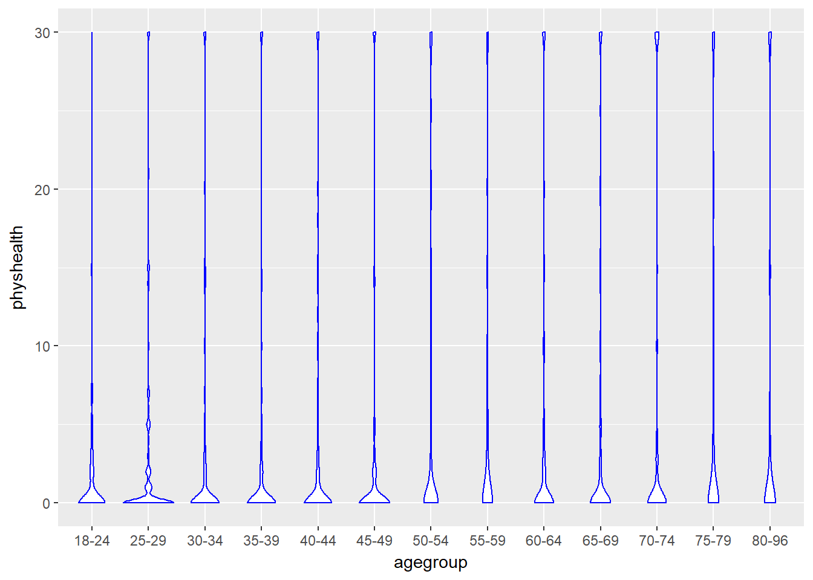
It’s hard to see much of anything here. The main conclusion seems to be that 0 is by far the most common response.
Here’s a table by age group of:
- the number of respondents in that age group,
- the group’s mean
physhealthresponse (remember that these are the number of poor physical health days in the last 30), - their median
physhealthresponse (which turns out to be 0 in each group), and - the percentage of group members who responded 0.
sm_oh_A %>% group_by(agegroup) %>%
summarize(n = n(), mean = round(mean(physhealth),2),
median = median(physhealth),
percent_0s = round(100*sum(physhealth == 0)/n,1))# A tibble: 13 x 5
agegroup n mean median percent_0s
<fct> <int> <dbl> <dbl> <dbl>
1 18-24 243 1.91 0. 65.4
2 25-29 220 2.39 0. 66.4
3 30-34 282 3.11 0. 68.8
4 35-39 241 2.95 0. 70.1
5 40-44 285 2.91 0. 66.0
6 45-49 364 2.95 0. 69.8
7 50-54 403 5.11 0. 61.5
8 55-59 510 5.37 0. 57.3
9 60-64 515 4.33 0. 61.2
10 65-69 550 4.34 0. 64.2
11 70-74 349 5.38 0. 64.5
12 75-79 270 5.54 0. 60.7
13 80-96 320 5.68 0. 61.6We can see a real change between the 45-49 age group and the 50-54 age group. The mean difference is clear from the table above, and the plot below (of the percentage with a zero response) in each age group identifies the same story.
sm_oh_A %>% group_by(agegroup) %>%
summarize(n = n(),
percent_0s = round(100*sum(physhealth == 0)/n,1)) %>%
ggplot(aes(y = agegroup, x = percent_0s)) +
geom_label(aes(label = percent_0s)) +
labs(x = "% with no Bad Physical Health Days in last 30",
y = "Age Group")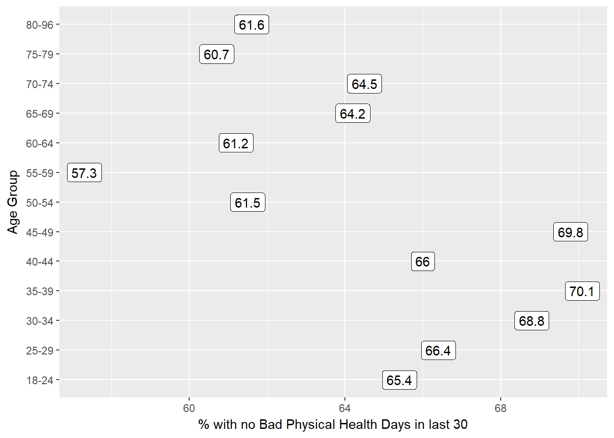
It looks like we have a fairly consistent result in the younger age range (18-49) or the older range (50+). On the theory that most of the people reading this document are in that younger range, we’ll focus on those respondents in what follows.
18.3 Exploratory Data Analysis (in the 18-49 group)
We want to predict the 0-30 physhealth count variable for the 18-49 year old respondents.
To start, we’ll use two predictors:
- the respondent’s body mass index, and
- whether the respondent has smoked 100 cigarettes in their lifetime.
We anticipate that each of these variables will have positive associations with the physhealth score. That is, heavier people, and those who have used tobacco will be less healthy, and thus have higher numbers of poor physical health days.
18.3.1 Build a subset of those ages 18-49
First, we’ll identify the subset of respondents who are between 18 and 49 years of age.
sm_oh_A_young.raw <- sm_oh_A %>%
filter(agegroup %in% c("18-24", "25-29", "30-34",
"35-39", "40-44", "45-49")) %>%
droplevels()
sm_oh_A_young.raw %>%
select(physhealth, bmi, smoke100, agegroup) %>%
summary physhealth bmi smoke100 agegroup
Min. : 0.000 Min. : 12.71 Min. :0.0000 18-24:243
1st Qu.: 0.000 1st Qu.: 23.50 1st Qu.:0.0000 25-29:220
Median : 0.000 Median : 26.69 Median :0.0000 30-34:282
Mean : 2.741 Mean : 28.21 Mean :0.3676 35-39:241
3rd Qu.: 2.000 3rd Qu.: 31.39 3rd Qu.:1.0000 40-44:285
Max. :30.000 Max. :110.88 Max. :1.0000 45-49:364 Now, let’s look more closely at the distribution of these variables, starting with our outcome.
18.3.2 Distribution of the Outcome
What’s the distribution of physhealth?
ggplot(sm_oh_A_young.raw, aes(x = physhealth)) +
geom_histogram(binwidth = 1, fill = "red", col = "white")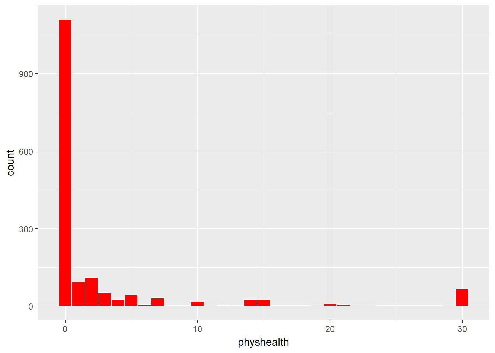
sm_oh_A_young.raw %>%
count(physhealth == 0, physhealth == 30)# A tibble: 3 x 3
`physhealth == 0` `physhealth == 30` n
<lgl> <lgl> <int>
1 FALSE FALSE 459
2 FALSE TRUE 66
3 TRUE FALSE 1110Most of our respondents said zero, the minimum allowable value, although there is also a much smaller bump at 30, the maximum value we will allow.
Dealing with this distribution is going to be a bit of a challenge. We will develop a series of potential modeling approaches for this sort of data, but before we do that, let’s look at the distribution of our other two variables, and the pairwise associations, in a scatterplot matrix.
18.3.3 Initial Scatterplot Matrix
GGally::ggpairs(sm_oh_A_young.raw %>%
select(bmi, smoke100, physhealth))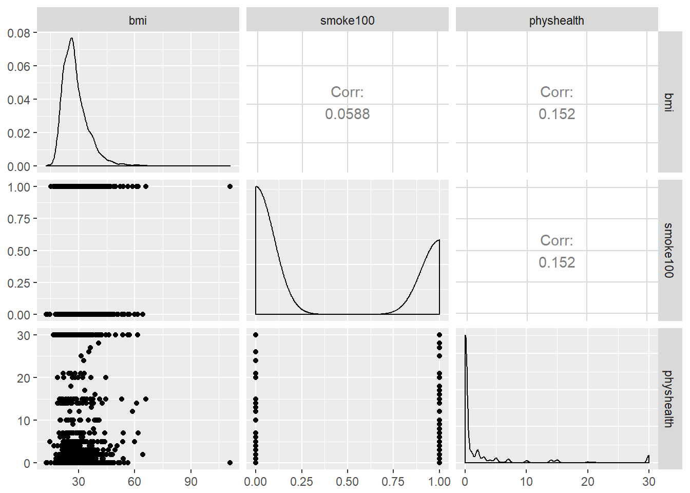
18.3.4 Dropping the subject with an unreasonably large bmi
It looks like there is a very large outlier in the bmi data. This subject appears to be a full 40 kg/m2 larger than the next largest subject. Without a good explanation for that discrepancy, I will remove that subject before fitting models. I’m also going to center the bmi variable to help me interpret the final models later.
sm_oh_A_young <- sm_oh_A_young.raw %>%
mutate(bmi_c = bmi - mean(bmi)) %>%
filter(bmi < 80)
nrow(sm_oh_A_young)[1] 163418.3.5 Revised (Final) Scatterplot Matrix
Now, here’s the revised scatterplot matrix for those 1634 subjects, now using the centered bmi data captured in the bmi_c variable.
GGally::ggpairs(sm_oh_A_young %>%
select(bmi_c, smoke100, physhealth))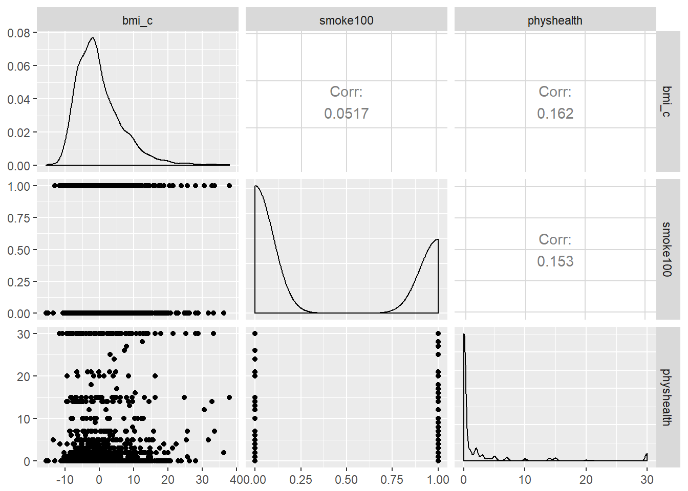
So bmi_c and smoke100 each have modest positive correlations with physhealth and only a very small correlation with each other. Here are some summary statistics for this final data.
18.3.6 Summary of the final subset of data
Remember that since the mean of bmi is 28.2, the bmi_c values are just bmi - 28.2 for each subject.
sm_oh_A_young %>%
select(bmi, bmi_c, smoke100, physhealth) %>%
skim()Skim summary statistics
n obs: 1634
n variables: 4
Variable type: integer
variable missing complete n mean sd p0 p25 median p75 p100
physhealth 0 1634 1634 2.74 6.77 0 0 0 2 30
smoke100 0 1634 1634 0.37 0.48 0 0 0 1 1
Variable type: numeric
variable missing complete n mean sd p0 p25 median p75
bmi 0 1634 1634 28.16 6.84 12.71 23.5 26.69 31.39
bmi_c 0 1634 1634 -0.051 6.84 -15.5 -4.72 -1.53 3.18
p100
66.06
37.8518.4 Modeling Strategies Explored Here
We are going to predict physhealth using bmi_c and smoke100.
- Remember that
physhealthis a count of the number of poor physical health days in the past 30. - As a result,
physhealthis restricted to taking values between 0 and 30.
We will demonstrate the use of each of the following regression models, some of which are better choices than others.
- Ordinary Least Squares (OLS) predicting
physhealth - OLS predicting the logarithm of (
physhealth+ 1) - Poisson regression, which is appropriate for predicting counts
- Poisson regression, adjusted to account for overdispersion
- Negative binomial regression, also used for counts and which adjusts for overdispersion
- Zero-inflated models, in both the Poisson and Negative Binomial varieties, which allow us to fit counts that have lots of zero values
- A “hurdle” model, which allows us to separately fit a model to predict the incidence of “0” and then a separate model to predict the value of
physhealthwhen we know it is not zero - Tobit regression, where a lower (and upper) bound may be set, but the underlying model describes a latent variable which can extend beyond these boundaries
18.4.1 What Will We Demonstrate?
With each approach, we will fit the model and specify procedures for doing so in R. Then we will:
- Specify the fitted model equation
- Interpret the model’s coefficient estimates and 95% confidence intervals around those estimates.
- Perform a test of whether each variable adds value to the model, when the other one is already included.
- Store the fitted values and appropriate residuals for each model.
- Summarize the model’s apparent R2 value, the proportion of variation explained, and the model log likelihood.
- Perform checks of model assumptions as appropriate.
- Describe how predictions would be made for two new subjects.
- Harry has a BMI that is 10 kg/m2 higher than the average across all respondents and has smoked more than 100 cigarettes in his life.
- Sally has a BMI that is 5 kg/m2 less than the average across all respondents and has not smoked more than 100 cigarettes in her life.
In addition, for some of the new models, we provide a little of the mathematical background, and point to other resources you can use to learn more about the model.
18.4.2 Extra Data File for Harry and Sally
To make our lives a little easier, I’ll create a little tibble containing the necessary data for Harry and Sally.
hs_data <- data_frame(subj = c("Harry", "Sally"),
bmi_c = c(10, -5),
smoke100 = c(1, 0))
hs_data# A tibble: 2 x 3
subj bmi_c smoke100
<chr> <dbl> <dbl>
1 Harry 10. 1.
2 Sally -5. 0.18.5 The OLS Approach
mod_ols1 <- lm(physhealth ~ bmi_c + smoke100,
data = sm_oh_A_young)
summary(mod_ols1)
Call:
lm(formula = physhealth ~ bmi_c + smoke100, data = sm_oh_A_young)
Residuals:
Min 1Q Median 3Q Max
-8.320 -3.119 -1.715 -0.722 29.364
Coefficients:
Estimate Std. Error t value Pr(>|t|)
(Intercept) 2.00443 0.20576 9.741 < 2e-16 ***
bmi_c 0.15283 0.02394 6.385 2.23e-10 ***
smoke100 2.03065 0.33978 5.976 2.80e-09 ***
---
Signif. codes: 0 '***' 0.001 '**' 0.01 '*' 0.05 '.' 0.1 ' ' 1
Residual standard error: 6.612 on 1631 degrees of freedom
Multiple R-squared: 0.04711, Adjusted R-squared: 0.04595
F-statistic: 40.32 on 2 and 1631 DF, p-value: < 2.2e-16confint(mod_ols1) 2.5 % 97.5 %
(Intercept) 1.6008443 2.4080211
bmi_c 0.1058826 0.1997872
smoke100 1.3642003 2.697105018.5.1 The Fitted Equation
The OLS fitted model equation is
physhealth = 2.00 + 0.15 bmi_c + 2.03 smoke10018.5.2 Interpreting the Coefficients
- The intercept, 2.00, is the predicted
physhealth(in days) for a subject with average BMI who has not smoked 100 cigarettes or more. - The
bmi_ccoefficient, 0.15, indicates that for each additional kg/m2 of BMI, while holdingsmoke100constant, the predictedphyshealthvalue increases by 0.15 day. - The
smoke100coefficient, 2.03, indicates that a subject who has smoked 100 cigarettes or more has a predictedphyshealthvalue 2.03 days larger than another subject with the samebmibut who has not smoked 100 cigarettes.
18.5.3 Testing the Predictors
We can use the t test results provided above to assess the significance of each term, after the other is already included in the model. Each p value is well below our usual \(\alpha\) levels, so we conclude that each predictor adds statistically detectable predictive value to the model.
18.5.4 Store fitted values and residuals
We can use broom to do this. Here, for instance, is a table of the first six predictions and residuals.
sm_ols_1 <- augment(mod_ols1, sm_oh_A_young)
sm_ols_1 %>% select(physhealth, .fitted, .resid) %>% head() physhealth .fitted .resid
1 0 1.767314 -1.7673143
2 0 2.912048 -2.9120475
3 0 1.619064 -1.6190645
4 2 2.219706 -0.2197055
5 4 5.427710 -1.4277096
6 6 1.397454 4.6025461It turns out that 3 of the 1634 predictions that we make are below 0, and the largest prediction made by this model is 9.82 days.
18.5.5 Specify the R2 and log(likelihood) values
The glance function in the broom package gives us the raw and adjusted R2 values, and the model log(likelihood), among other summaries.
glance(mod_ols1) %>% round(3) r.squared adj.r.squared sigma statistic p.value df logLik AIC
1 0.047 0.046 6.612 40.321 0 3 -5403.463 10814.93
BIC deviance df.residual
1 10836.52 71303.07 1631Here, we have
| Model | R2 | log(likelihood) |
|---|---|---|
| OLS | .047 | -5409.3 |
18.5.6 Check model assumptions
Here is a plot of the residuals vs. the fitted values for this OLS model.
ggplot(sm_ols_1, aes(x = .fitted, y = .resid)) +
geom_point() +
labs(title = "Residuals vs. Fitted Values for OLS model")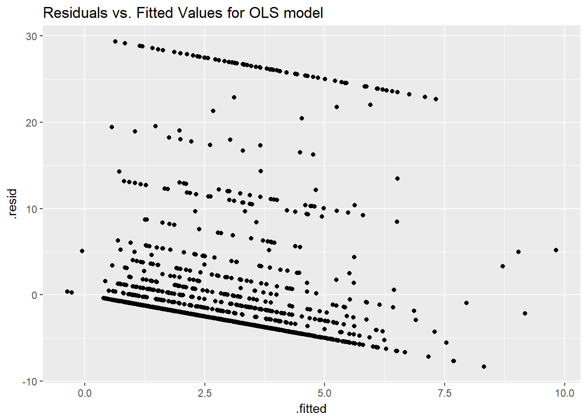
As usual, we can check OLS assumptions (linearity, homoscedasticity and normality) with R’s complete set of residual plots.
par(mfrow = c(2,2))
plot(mod_ols1)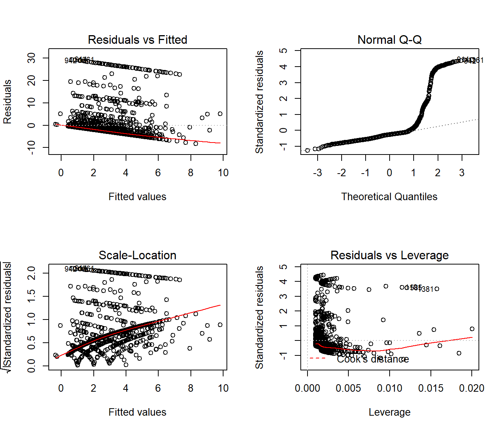
par(mfrow = c(1,1))We see the problem with our residuals. They don’t follow a Normal distribution.
18.5.7 Predictions for Harry and Sally
predict(mod_ols1, newdata = hs_data,
interval = "prediction") fit lwr upr
1 5.563434 -7.423906 18.55077
2 1.240258 -11.736608 14.21712The prediction for Harry is 5.6 days, and for Sally is 1.2 days. The prediction intervals for each include some values below 0, which is the smallest possible value.
18.5.8 Notes
- This model could have been estimated using the
olsfunction in thermspackage, as well.
dd <- datadist(sm_oh_A_young)
options(datadist = "dd")
(mod_ols1a <- ols(physhealth ~ bmi_c + smoke100,
data = sm_oh_A_young, x = TRUE, y = TRUE))Linear Regression Model
ols(formula = physhealth ~ bmi_c + smoke100, data = sm_oh_A_young,
x = TRUE, y = TRUE)
Model Likelihood Discrimination
Ratio Test Indexes
Obs 1634 LR chi2 78.86 R2 0.047
sigma6.6119 d.f. 2 R2 adj 0.046
d.f. 1631 Pr(> chi2) 0.0000 g 1.641
Residuals
Min 1Q Median 3Q Max
-8.320 -3.119 -1.715 -0.722 29.364
Coef S.E. t Pr(>|t|)
Intercept 2.0044 0.2058 9.74 <0.0001
bmi_c 0.1528 0.0239 6.38 <0.0001
smoke100 2.0307 0.3398 5.98 <0.0001
18.6 OLS model on log(physhealth + 1) days
We could try to solve the problem of fitting some predictions below 0 by log-transforming the data, so as to force values to be at least 0. Since we have undefined values when we take the log of 0, we’ll add one to each of the physhealth values before taking logs, and then transform back when we want to make predictions.
mod_ols_log1 <- lm(log(physhealth + 1) ~ bmi_c + smoke100,
data = sm_oh_A_young)
summary(mod_ols_log1)
Call:
lm(formula = log(physhealth + 1) ~ bmi_c + smoke100, data = sm_oh_A_young)
Residuals:
Min 1Q Median 3Q Max
-1.4934 -0.6119 -0.3893 0.3721 3.1911
Coefficients:
Estimate Std. Error t value Pr(>|t|)
(Intercept) 0.477789 0.030053 15.898 < 2e-16 ***
bmi_c 0.026244 0.003496 7.506 9.96e-14 ***
smoke100 0.279783 0.049627 5.638 2.03e-08 ***
---
Signif. codes: 0 '***' 0.001 '**' 0.01 '*' 0.05 '.' 0.1 ' ' 1
Residual standard error: 0.9657 on 1631 degrees of freedom
Multiple R-squared: 0.05381, Adjusted R-squared: 0.05265
F-statistic: 46.38 on 2 and 1631 DF, p-value: < 2.2e-16confint(mod_ols_log1) 2.5 % 97.5 %
(Intercept) 0.41884235 0.53673474
bmi_c 0.01938609 0.03310135
smoke100 0.18244395 0.3771216418.6.1 The Fitted Equation
The equation here is
log(physhealth + 1) = 0.48 + 0.026 bmi_c + 0.28 smoke10018.6.2 Interpreting the Coefficients
- The intercept, 0.48, is the predicted logarithm of (
physhealth+ 1) (in days) for a subject with average BMI who has not smoked 100 cigarettes or more.- We can exponentiate to see that the prediction for (
physhealth+ 1) here isexp(0.48)= 1.62 so the predictedphyshealthfor a subject with average BMI who has not smoked 100 cigarettes is 0.62 days.
- We can exponentiate to see that the prediction for (
- The
bmi_ccoefficient, 0.15, indicates that for each additional kg/m2 of BMI, while holdingsmoke100constant, the predicted logarithm of (physhealth+ 1) increases by 0.026 - The
smoke100coefficient, 0.28, indicates that a subject who has smoked 100 cigarettes or more has a predicted log of (physhealth+ 1) value that is 0.28 larger than another subject with the samebmibut who has not smoked 100 cigarettes.
18.6.3 Testing the Predictors
We are still fitting an OLS model here, so we can still use the t test results provided above to assess the significance of each term, after the other is already included in the model. Each p value is well below our usual \(\alpha\) levels, so we conclude that each predictor adds statistically detectable predictive value to the model.
18.6.4 Store fitted values and residuals
We can use broom to help us with this. Here, for instance, is a table of the first six predictions and residuals, on the scale of our transformed response, log(physhealth + 1).
sm_ols_log1 <- augment(mod_ols_log1, sm_oh_A_young)
sm_ols_log1 <- sm_ols_log1 %>%
mutate(outcome = log(physhealth + 1))
sm_ols_log1 %>%
select(physhealth, outcome, .fitted, .resid) %>%
head() physhealth outcome .fitted .resid
1 0 0.000000 0.4370723 -0.4370723
2 0 0.000000 0.6336377 -0.6336377
3 0 0.000000 0.4116159 -0.4116159
4 2 1.098612 0.5147537 0.5838586
5 4 1.609438 1.0656093 0.5438286
6 6 1.945910 0.3735625 1.5723477Note that the outcome used in this model is log(physhealth + 1), so the .fitted and .resid values react to that outcome, and not to our original physhealth.
Another option would be to calculate the model-predicted physhealth, which I’ll call ph for a moment, with the formula:
\[ ph = e^{.fitted} - 1 \]
sm_ols_log1 <- sm_ols_log1 %>%
mutate(pred.physhealth = exp(.fitted) - 1,
res.physhealth = physhealth - pred.physhealth)
sm_ols_log1 %>%
select(physhealth, pred.physhealth, res.physhealth) %>%
head() physhealth pred.physhealth res.physhealth
1 0 0.5481679 -0.5481679
2 0 0.8844532 -0.8844532
3 0 0.5092545 -0.5092545
4 2 0.6732263 1.3267737
5 4 1.9026070 2.0973930
6 6 0.4529013 5.5470987It turns out that 0 of the 1634 predictions that we make are below 0, and the largest prediction made by this model is 4.76 days.
18.6.5 Specify the R2 and log(likelihood) values
The glance function in the broom package gives us the raw and adjusted R2 values, and the model log(likelihood), among other summaries.
glance(mod_ols_log1) %>% round(3) r.squared adj.r.squared sigma statistic p.value df logLik AIC
1 0.054 0.053 0.966 46.376 0 3 -2260.022 4528.044
BIC deviance df.residual
1 4549.639 1521.046 1631Here, we have
| Model | Scale | R2 | log(likelihood) |
|---|---|---|---|
| OLS on log | log(physhealth + 1) |
.054 | -2262.0 |
18.6.6 Getting R2 on the scale of physhealth
We could find the correlation of our model-predicted physhealth values, after back-transformation, and our observed physhealth values, if we wanted to, and then square that to get a sort of R2 value. But this model is not linear in physhealth, of course, so it’s not completely comparable to our prior OLS model.
18.6.7 Check model assumptions
As usual, we can check OLS assumptions (linearity, homoscedasticity and normality) with R’s complete set of residual plots. Of course, these residuals and fitted values are now on the log(physhealth + 1) scale.
par(mfrow = c(2,2))
plot(mod_ols_log1)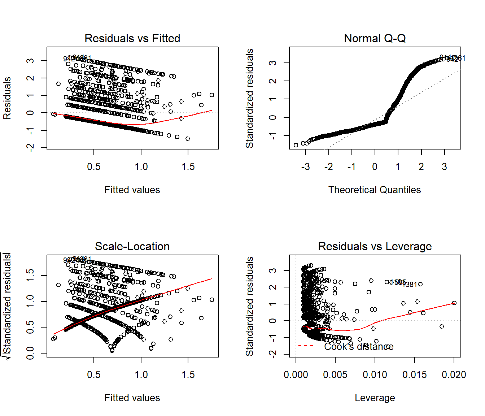
par(mfrow = c(1,1))18.6.8 Predictions for Harry and Sally
predict(mod_ols_log1, newdata = hs_data,
interval = "prediction", type = "response") fit lwr upr
1 1.020009 -0.8768604 2.916877
2 0.346570 -1.5487692 2.241909Again, these predictions are on the log(physhealth + 1) scale, and so we have to exponentiate them, and then subtract 1, to see them on the original physhealth scale.
exp(predict(mod_ols_log1, newdata = hs_data,
interval = "prediction", type = "response")) - 1 fit lwr upr
1 1.7732184 -0.5839128 17.483482
2 0.4142084 -0.7874906 8.411281The prediction for Harry is now 1.77 days, and for Sally is 0.41 days. The prediction intervals for each again include some values below 0, which is the smallest possible value.
18.7 A Poisson Regression Model
The physhealth data describe a count. Specifically a count of the number of days where the subject felt poorly in the last 30. Why wouldn’t we model this count with linear regression?
- A count can only be positive. Linear regression would estimate some subjects as having negative counts.
- A count is unlikely to follow a Normal distribution. In fact, it’s far more likely that the log of the counts will follow a Poisson distribution.
So, we’ll try that. The Poisson distribution is used to model a count outcome - that is, an outcome with possible values (0, 1, 2, …). The model takes a somewhat familiar form to the models we’ve used for linear and logistic regression12. If our outcome is y and our linear predictors X, then the model is:
\[ y_i \sim \mbox{Poisson}(\lambda_i) \]
The parameter \(\lambda\) must be positive, so it makes sense to fit a linear regression on the logarithm of this…
\[ \lambda_i = exp(\beta_0 + \beta_1 X_1 + ... \beta_k X_k) \]
The coefficients \(\beta\) can be exponentiated and treated as multiplicative effects.
We’ll run a generalized linear model with a log link function, ensuring that all of the predicted values will be positive, and using a Poisson error distribution. This is called Poisson regression.
Poisson regression may be appropriate when the dependent variable is a count of events. The events must be independent - the occurrence of one event must not make any other more or less likely. That’s hard to justify in our case, but we can take a look.
mod_poiss1 <- glm(physhealth ~ bmi_c + smoke100,
family = poisson(),
data = sm_oh_A_young)
summary(mod_poiss1)
Call:
glm(formula = physhealth ~ bmi_c + smoke100, family = poisson(),
data = sm_oh_A_young)
Deviance Residuals:
Min 1Q Median 3Q Max
-5.0671 -2.3418 -1.8163 -0.7165 11.4801
Coefficients:
Estimate Std. Error z value Pr(>|z|)
(Intercept) 0.634600 0.022548 28.14 <2e-16 ***
bmi_c 0.043260 0.001707 25.34 <2e-16 ***
smoke100 0.704834 0.030062 23.45 <2e-16 ***
---
Signif. codes: 0 '***' 0.001 '**' 0.01 '*' 0.05 '.' 0.1 ' ' 1
(Dispersion parameter for poisson family taken to be 1)
Null deviance: 15034 on 1633 degrees of freedom
Residual deviance: 13880 on 1631 degrees of freedom
AIC: 15678
Number of Fisher Scoring iterations: 7confint(mod_poiss1)Waiting for profiling to be done... 2.5 % 97.5 %
(Intercept) 0.59008614 0.67847727
bmi_c 0.03989052 0.04658361
smoke100 0.64596664 0.7638141918.7.1 The Fitted Equation
The model equation is
log(physhealth) = 0.63 + 0.043 bmi_c + 0.71 smoke100It looks like both bmi and smoke_100 have confidence intervals excluding 0.
18.7.2 Interpreting the Coefficients
Our new model for \(y_i\) = counts of poor physhealth days in the last 30, follows the regression equation:
\[ y_i \sim \mbox{Poisson}(exp(0.63 + 0.043 bmi_c + 0.71 smoke100)) \]
where smoke100 is 1 if the subject has smoked 100 cigarettes (lifetime) and 0 otherwise, and bmi_c is just the centered body-mass index value in kg/m2. We interpret the coefficients as follows:
- The constant term, 0.63, gives us the intercept of the regression - the prediction if
smoke100 = 0andbmi_c = 0. In this case, because we’ve centered BMI, it implies thatexp(0.63)= 1.88 is the predicted days of poorphyshealthfor a non-smoker with average BMI. - The coefficient of
bmi_c, 0.043, is the expected difference in count of poorphyshealthdays (on the log scale) for each additional kg/m2 of body mass index. The expected multiplicative increase is \(e^{0.043}\) = 1.044, corresponding to a 4.4% difference in the count. - The coefficient of
smoke100, 0.71, tells us that the predictive difference between those who have and who have not smoked 100 cigarettes can be found by multiplying thephyshealthcount by exp(0.71) = 2.03, yielding essentially a doubling of thephyshealthcount.
As with linear or logistic regression, each coefficient is interpreted as a comparison where one predictor changes by one unit, while the others remain constant.
18.7.3 Testing the Predictors
We can use the Wald tests (z tests) provided with the Poisson regression output, or we can fit the model and then run an ANOVA to obtain a test based on the deviance (a simple transformation of the log likelihood ratio.)
- By the Wald tests shown above, each predictor clearly adds significant predictive value to the model given the other predictor, and we note that the p values are as small as R will support.
- The ANOVA approach for this model lets us check the impact of adding
smoke100to a model already containingbmi_c.
anova(mod_poiss1, test = "Chisq")Analysis of Deviance Table
Model: poisson, link: log
Response: physhealth
Terms added sequentially (first to last)
Df Deviance Resid. Df Resid. Dev Pr(>Chi)
NULL 1633 15034
bmi_c 1 602.50 1632 14432 < 2.2e-16 ***
smoke100 1 551.04 1631 13880 < 2.2e-16 ***
---
Signif. codes: 0 '***' 0.001 '**' 0.01 '*' 0.05 '.' 0.1 ' ' 1To obtain a p value for smoke100’s impact after bmi_c is accounted for, we compare the difference in deviance to a chi-square distribution with 1 degree of freedom. To check the effect of bmi_c, we could refit the model with bmi_c entering last, and again run an ANOVA.
We could also run a likelihood-ratio test for each predictor, by fitting the model with and without that predictor.
mod_poiss1_without_bmi <- glm(physhealth ~ smoke100,
family = poisson(),
data = sm_oh_A_young)
anova(mod_poiss1, mod_poiss1_without_bmi, test = "Chisq")Analysis of Deviance Table
Model 1: physhealth ~ bmi_c + smoke100
Model 2: physhealth ~ smoke100
Resid. Df Resid. Dev Df Deviance Pr(>Chi)
1 1631 13880
2 1632 14426 -1 -545.19 < 2.2e-16 ***
---
Signif. codes: 0 '***' 0.001 '**' 0.01 '*' 0.05 '.' 0.1 ' ' 118.7.4 Correcting for Overdispersion with coeftest/coefci
The main assumption we’ll think about in a Poisson model is about overdispersion. We might deal with the overdispersion we see in this model by changing the nature of the tests we run within this model, using the coeftest or coefci approaches from the lmtest package, as I’ll demonstrate next, or we might refit the model using a quasi-likelihood approach, as I’ll show in the material to come.
Here, we’ll use the coeftest and coefci approach from lmtest combined with robust sandwich estimation (via the sandwich package) to re-compute the Wald tests.
coeftest(mod_poiss1, vcov. = sandwich)
z test of coefficients:
Estimate Std. Error z value Pr(>|z|)
(Intercept) 0.6346000 0.0849574 7.4696 8.042e-14 ***
bmi_c 0.0432600 0.0068998 6.2697 3.617e-10 ***
smoke100 0.7048343 0.1199970 5.8738 4.260e-09 ***
---
Signif. codes: 0 '***' 0.001 '**' 0.01 '*' 0.05 '.' 0.1 ' ' 1coefci(mod_poiss1, vcov. = sandwich) 2.5 % 97.5 %
(Intercept) 0.46808660 0.80111331
bmi_c 0.02973658 0.05678343
smoke100 0.46964440 0.94002412Both predictors are still significant, but the standard errors are more appropriate. Later, we’ll fit this approach by changing the estimation method to a quasi-likelihood approach.
18.7.5 Store fitted values and residuals
What happens if we try using the broom package in this case? We can, if we like, get our residuals and predicted values right on the scale of our physhealth response.
sm_poiss1 <- augment(mod_poiss1, sm_oh_A_young,
type.predict = "response",
type.residuals = "response")
sm_poiss1 %>%
select(physhealth, .fitted, .resid) %>%
head() physhealth .fitted .resid
1 0 1.763823 -1.763822711
2 0 2.438787 -2.438787228
3 0 1.691340 -1.691340221
4 2 2.004777 -0.004777456
5 4 4.970699 -0.970699342
6 6 1.588506 4.41149354418.7.6 Rootogram: see the fit of a count regression model
A rootogram is a very useful way to visualize the fit of a count regression model13. The rootogram function in the countreg package makes this pretty straightforward. By default, this fits a hanging rootogram on the square root of the frequencies.
rootogram(mod_poiss1, max = 30)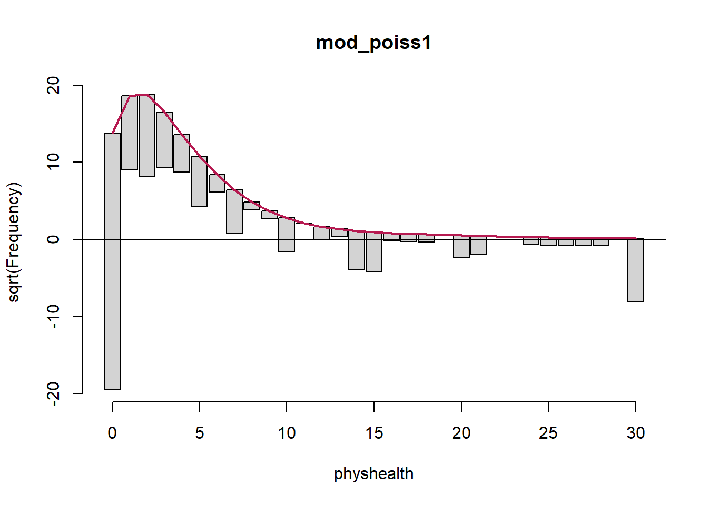
The red curved line is the theoretical Poisson fit. “Hanging” from each point on the red line is a bar, the height of which represents the difference between expected and observed counts. A bar hanging below 0 indicates underfitting. A bar hanging above 0 indicates overfitting. The counts have been transformed with a square root transformation to prevent smaller counts from getting obscured and overwhelmed by larger counts. We see a great deal of underfitting for counts of 0, and overfitting for most other counts, especially 1-6, with some underfitting again by physhealth above 14 days.
18.7.7 Specify the R2 and log(likelihood) values
We can calculate the R2 as the squared correlation of the fitted values and the observed values.
# The correlation of observed and fitted values
(poiss_r <- with(sm_poiss1, cor(physhealth, .fitted)))[1] 0.2217254# R-square
poiss_r^2[1] 0.04916215The glance function in the broom package gives us model log(likelihood), among other summaries.
glance(mod_poiss1) %>% round(3) null.deviance df.null logLik AIC BIC deviance df.residual
1 15034.01 1633 -7835.914 15677.83 15694.02 13880.47 1631Here, we have
| Model | Scale | R2 | log(likelihood) |
|---|---|---|---|
| Poisson | log(physhealth) |
.049 | -7841.69 |
18.7.8 Check model assumptions
The Poisson model is a classical generalized linear model, estimated using the method of maximum likelihood. While the default plot option for a glm still shows the plots we would use to assess the assumptions of an OLS model, we don’t actually get much from that, since our Poisson model has different assumptions. It can be useful to look at a plot of residuals vs. fitted values on the original physhealth scale.
ggplot(sm_poiss1, aes(x = .fitted, y = .resid)) +
geom_point() +
labs(title = "Residuals vs. Fitted `physhealth`",
subtitle = "Original Poisson Regression model")18.7.9 Using glm.diag.plots from the boot package
The glm.diag.plots function from the boot package makes a series of diagnostic plots for generalized linear models.
- (Top, Left) Jackknife deviance residuals against fitted values. This is essentially identical to what you obtain with
plot(mod_poiss1, which = 1). A jackknife deviance residual is also called a likelihood residual. It is the change in deviance when this observation is omitted from the data. - (Top, Right) Normal Q-Q plot of standardized deviance residuals. (Dotted line shows expectation if those standardized residuals followed a Normal distribution, and these residuals generally should.) The result is similar to what you obtain with
plot(mod_poiss1, which = 2). - (Bottom, Left) Cook statistic vs. standardized leverage
- n = # of observations, p = # of parameters estimated
- Horizontal dotted line is at \(\frac{8}{n - 2p}\). Points above the line have high influence on the model.
- Vertical line is at \(\frac{2p}{n - 2p}\). Points to the right of the line have high leverage.
- (Bottom, Right) Index plot of Cook’s statistic to help identify the observations with high influence. This is essentially the same plot as
plot(mod_poiss1, which = 4)
glm.diag.plots(mod_poiss1)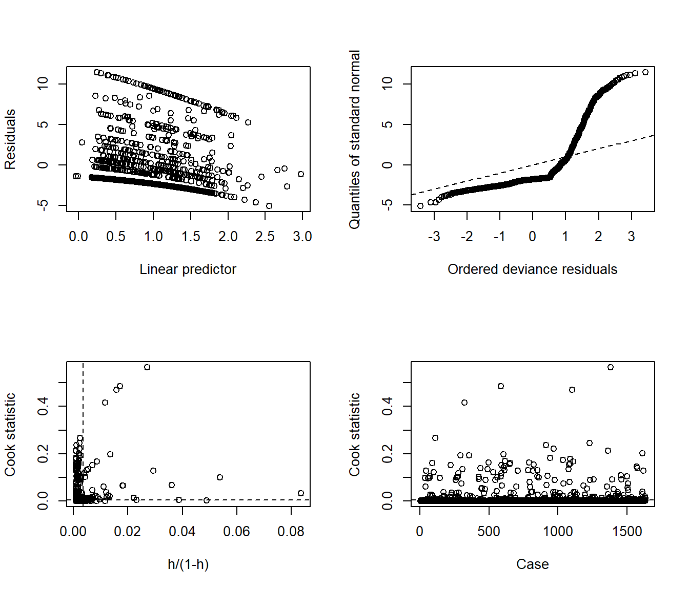
When working with these plots, it is possible to use the iden command to perform some interactive identification of points in your R terminal. But that doesn’t play out effectively in an HTML summary document like this, so we’ll leave that out.
18.7.10 Predictions for Harry and Sally
The predictions from a glm fit like this don’t include prediction intervals. But we can get predictions on the scale of our original response variable, physhealth, like this.
predict(mod_poiss1, newdata = hs_data, se.fit = TRUE,
type = "response")$fit
1 2
5.882808 1.519376
$se.fit
1 2
0.13739453 0.03858279
$residual.scale
[1] 1By using response as the type, these predictions fall on the original physhealth scale. The prediction for Harry is now 5.87 days, and for Sally is 1.52 days.
18.8 Overdispersion in a Poisson Model
Poisson regressions do not supply an independent variance parameter \(\sigma\), and as a result can be overdispersed, and usually are. Under the Poisson distribution, the variance equals the mean - so the standard deviation equals the square root of the mean. The notion of overdispersion arises here. When fitting generalized linear models with Poisson error distributions, the residual deviance and its degrees of freedom should be approximately equal if the model fits well.
If the residual deviance is far greater than the degrees of freedom, then overdispersion may well be a problem. In this case, the residual deviance is about 8.5 times the size of the residual degrees of freedom, so that’s a clear indication of overdispersion. We saw earlier that the Poisson regression model requires that the outcome (here the physhealth counts) be independent. A possible reason for the overdispersion we see here is that physhealth on different days likely do not occur independently of one another but likely “cluster” together.
18.8.1 Testing for Overdispersion?
Gelman and Hill provide an overdispersion test in R for a Poisson model as follows…
yhat <- predict(mod_poiss1, type = "response")
n <- arm::display(mod_poiss1)$nglm(formula = physhealth ~ bmi_c + smoke100, family = poisson(),
data = sm_oh_A_young)
coef.est coef.se
(Intercept) 0.63 0.02
bmi_c 0.04 0.00
smoke100 0.70 0.03
---
n = 1634, k = 3
residual deviance = 13880.5, null deviance = 15034.0 (difference = 1153.5)k <- arm::display(mod_poiss1)$kglm(formula = physhealth ~ bmi_c + smoke100, family = poisson(),
data = sm_oh_A_young)
coef.est coef.se
(Intercept) 0.63 0.02
bmi_c 0.04 0.00
smoke100 0.70 0.03
---
n = 1634, k = 3
residual deviance = 13880.5, null deviance = 15034.0 (difference = 1153.5)z <- (sm_oh_A_young$physhealth - yhat) / sqrt(yhat)
cat("overdispersion ratio is ", sum(z^2)/ (n - k), "\n")overdispersion ratio is 15.49983 cat("p value of overdispersion test is ", pchisq(sum(z^2)/(n-k), n-k), "\n")p value of overdispersion test is 0 The p value here is 0, indicating that the probability is essentially zero that a random variable from a \(\chi^2\) distribution with (n - k) = 1633 degrees of freedom would be as large as what we observed in this case.
In summary, the polyps counts are overdispersed by a factor of 15.499, which is enormous (even a factor of 2 would be considered large) and also highly statistically significant. The basic correction for overdisperson is to multiply all regression standard errors by \(\sqrt{15.499}\) = 3.94.
The quasipoisson model and the negative binomial model that we’ll fit below are very similar. We write the overdispersed “quasiPoisson” model as:
\[ y_i \sim \mbox{overdispersed Poisson} (\mu_i exp(X_i \beta), \omega) \]
where \(\omega\) is the overdispersion parameter, 15.499, in our case. The Poisson model we saw previously is then just the overdispersed Poisson model with \(\omega = 1\).
18.9 Fitting the Quasi-Poisson Model
To deal with overdispersion, one useful approach is to apply a quasi-likelihood estimation procedure, as follows:
mod_poiss_od1 <- glm(physhealth ~ bmi_c + smoke100,
family = quasipoisson(),
data = sm_oh_A_young)
summary(mod_poiss_od1)
Call:
glm(formula = physhealth ~ bmi_c + smoke100, family = quasipoisson(),
data = sm_oh_A_young)
Deviance Residuals:
Min 1Q Median 3Q Max
-5.0671 -2.3418 -1.8163 -0.7165 11.4801
Coefficients:
Estimate Std. Error t value Pr(>|t|)
(Intercept) 0.634600 0.088771 7.149 1.32e-12 ***
bmi_c 0.043260 0.006722 6.436 1.61e-10 ***
smoke100 0.704834 0.118352 5.955 3.17e-09 ***
---
Signif. codes: 0 '***' 0.001 '**' 0.01 '*' 0.05 '.' 0.1 ' ' 1
(Dispersion parameter for quasipoisson family taken to be 15.49983)
Null deviance: 15034 on 1633 degrees of freedom
Residual deviance: 13880 on 1631 degrees of freedom
AIC: NA
Number of Fisher Scoring iterations: 7confint(mod_poiss_od1)Waiting for profiling to be done... 2.5 % 97.5 %
(Intercept) 0.4555430 0.80378993
bmi_c 0.0297236 0.05608646
smoke100 0.4734806 0.93793099This “quasi-Poisson regression” model uses the same mean function as Poisson regression, but now estimated by quasi-maximum likelihood estimation or, equivalently, through the method of generalized estimating equations, where the inference is adjusted by an estimated dispersion parameter. Sometimes, though I won’t demonstrate this here, people fit an “adjusted” Poisson regression model, where this estimation by quasi-ML is augmented to adjust the inference via sandwich estimates of the covariances14.
18.9.1 The Fitted Equation
The model equation is still log(physhealth) = 0.63 + 0.04 bmi_c + 0.71 smoke100. The estimated coefficients are still statistically significant, but the standard errors for each coefficient are considerably larger when we account for overdispersion.
The dispersion parameter for the quasi-Poisson family is now taken to be a bit less than the square root of the ratio of the residual deviance and its degrees of freedom. This is a much more believable model, as a result.
18.9.2 Interpreting the Coefficients
No meaningful change from the Poisson model we saw previously.
- The constant term, 0.63, gives us the intercept of the regression - the prediction if
smoke100 = 0andbmi_c = 0. In this case, because we’ve centered BMI, it implies thatexp(0.63)= 1.88 is the predicted days of poorphyshealthfor a non-smoker with average BMI. - The coefficient of
bmi_c, 0.043, is the expected difference in count of poorphyshealthdays (on the log scale) for each additional kg/m2 of body mass index. The expected multiplicative increase is \(e^{0.043}\) = 1.044, corresponding to a 4.4% difference in the count. - The coefficient of
smoke100, 0.71, tells us that the predictive difference between those who have and who have not smoked 100 cigarettes can be found by multiplying thephyshealthcount by exp(0.71) = 2.03, yielding essentially a doubling of thephyshealthcount.
18.9.3 Testing the Predictors
Again, we can use the Wald tests (z tests) provided with the Poisson regression output, or we can fit the model and then run an ANOVA to obtain a test based on the deviance (a simple transformation of the log likelihood ratio.)
- By the Wald tests shown above, each predictor clearly adds significant predictive value to the model given the other predictor, and we note that the p values are as small as R will support.
- The ANOVA approach for this model lets us check the impact of adding
smoke100to a model already containingbmi_c.
anova(mod_poiss_od1, test = "Chisq")Analysis of Deviance Table
Model: quasipoisson, link: log
Response: physhealth
Terms added sequentially (first to last)
Df Deviance Resid. Df Resid. Dev Pr(>Chi)
NULL 1633 15034
bmi_c 1 602.50 1632 14432 4.526e-10 ***
smoke100 1 551.04 1631 13880 2.484e-09 ***
---
Signif. codes: 0 '***' 0.001 '**' 0.01 '*' 0.05 '.' 0.1 ' ' 1The result is unchanged. To obtain a p value for smoke100’s impact after bmi_c is accounted for, we compare the difference in deviance to a chi-square distribution with 1 degree of freedom. The result is incredibly statistically significant.
To check the effect of bmi_c, we could refit the model with and without bmi_c, and again run an ANOVA. I’ll skip that here.
18.9.4 Store fitted values and residuals
What happens if we try using the broom package in this case? We can, if we like, get our residuals and predicted values right on the scale of our physhealth response.
sm_poiss_od1 <- augment(mod_poiss_od1, sm_oh_A_young,
type.predict = "response",
type.residuals = "response")
sm_poiss_od1 %>%
select(physhealth, .fitted, .resid) %>%
head() physhealth .fitted .resid
1 0 1.763823 -1.763822711
2 0 2.438787 -2.438787228
3 0 1.691340 -1.691340221
4 2 2.004777 -0.004777456
5 4 4.970699 -0.970699342
6 6 1.588506 4.411493544It turns out that 0 of the 1634 predictions that we make are below 0, and the largest prediction made by this model is 19.62 days.
The rootogram function we’ve shown doesn’t support overdispersed Poisson models at the moment.
18.9.5 Specify the R2 and log(likelihood) values
We can calculate the R2 as the squared correlation of the fitted values and the observed values.
# The correlation of observed and fitted values
(poiss_od_r <- with(sm_poiss_od1, cor(physhealth, .fitted)))[1] 0.2217254# R-square
poiss_od_r^2[1] 0.04916215The glance function in the broom package gives us model log(likelihood), among other summaries.
glance(mod_poiss_od1) %>% round(3) null.deviance df.null logLik AIC BIC deviance df.residual
1 15034.01 1633 NA NA NA 13880.47 1631Here, we have
| Model | Scale | R2 | log(likelihood) |
|---|---|---|---|
| Poisson | log(physhealth) |
.049 | NA |
18.9.6 Check model assumptions
Having dealt with the overdispersion, this should be a cleaner model in some ways, but the diagnostics (other than the dispersion) will be the same. Here is a plot of residuals vs. fitted values on the original physhealth scale.
ggplot(sm_poiss_od1, aes(x = .fitted, y = .resid)) +
geom_point() +
labs(title = "Residuals vs. Fitted `physhealth`",
subtitle = "Overdispersed Poisson Regression model")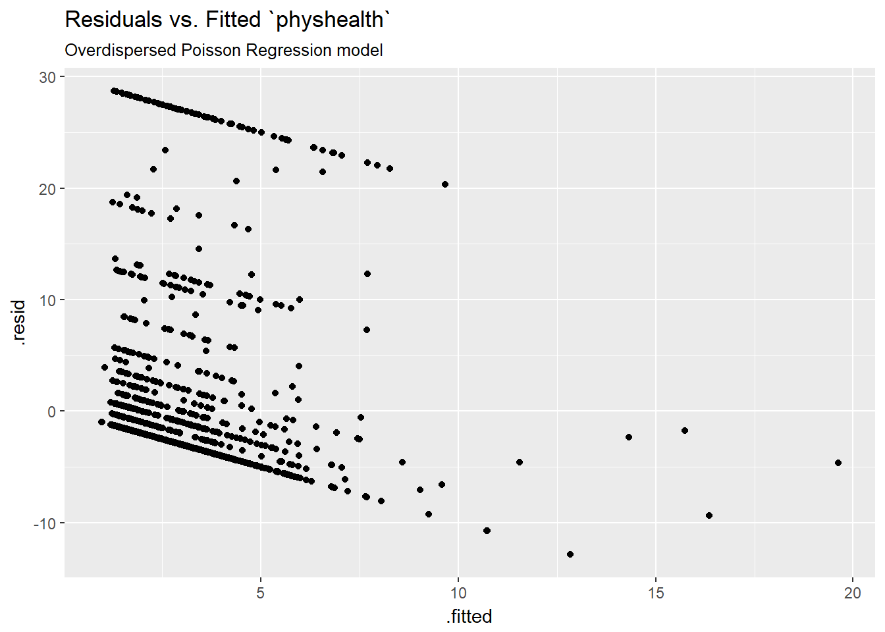
I’ll skip the glm.diag.plots results, since you’ve already seen them.
18.9.7 Predictions for Harry and Sally
The predictions from this overdispersed Poisson regression will match those in the original Poisson regression, but the standard error will be larger.
predict(mod_poiss_od1, newdata = hs_data, se.fit = TRUE,
type = "response")$fit
1 2
5.882808 1.519376
$se.fit
1 2
0.5409199 0.1518998
$residual.scale
[1] 3.936983By using response as the type, these predictions fall on the original physhealth scale. Again, the prediction for Harry is 5.87 days, and for Sally is 1.52 days.
18.10 Poisson and Quasi-Poisson models using Glm from the rms package
The Glm function in the rms package can be used to fit both the original Poisson regression and the quasi-Poisson model accounting for overdispersion.
18.10.1 Refitting the original Poisson regression with Glm
d <- datadist(sm_oh_A_young)
options(datadist = "d")
mod_poi_Glm_1 <- Glm(physhealth ~ bmi_c + smoke100,
family = poisson(),
data = sm_oh_A_young,
x = T, y = T)
mod_poi_Glm_1General Linear Model
Glm(formula = physhealth ~ bmi_c + smoke100, family = poisson(),
data = sm_oh_A_young, x = T, y = T)
Model Likelihood
Ratio Test
Obs 1634 LR chi2 1153.54
Residual d.f.1631 d.f. 2
g 0.5185238 Pr(> chi2) <0.0001
Coef S.E. Wald Z Pr(>|Z|)
Intercept 0.6346 0.0225 28.14 <0.0001
bmi_c 0.0433 0.0017 25.34 <0.0001
smoke100 0.7048 0.0301 23.45 <0.0001
18.10.2 Refitting the overdispersed Poisson regression with Glm
d <- datadist(sm_oh_A_young)
options(datadist = "d")
mod_poi_od_Glm_1 <- Glm(physhealth ~ bmi_c + smoke100,
family = quasipoisson(),
data = sm_oh_A_young,
x = T, y = T)
mod_poi_od_Glm_1General Linear Model
Glm(formula = physhealth ~ bmi_c + smoke100, family = quasipoisson(),
data = sm_oh_A_young, x = T, y = T)
Model Likelihood
Ratio Test
Obs 1634 LR chi2 1153.54
Residual d.f.1631 d.f. 2
g 0.5185238 Pr(> chi2) <0.0001
Coef S.E. Wald Z Pr(>|Z|)
Intercept 0.6346 0.0888 7.15 <0.0001
bmi_c 0.0433 0.0067 6.44 <0.0001
smoke100 0.7048 0.1184 5.96 <0.0001
The big advantage here is that we have access to the usual ANOVA, summary, and nomogram features that rms brings to fitting models.
18.10.3 ANOVA on a Glm fit
anova(mod_poi_od_Glm_1) Wald Statistics Response: physhealth
Factor Chi-Square d.f. P
bmi_c 41.42 1 <.0001
smoke100 35.47 1 <.0001
TOTAL 81.11 2 <.0001This shows the individual Wald \(\chi^2\) tests without having to refit the model.
18.10.4 ggplots from Glm fit
ggplot(Predict(mod_poi_od_Glm_1, fun = exp))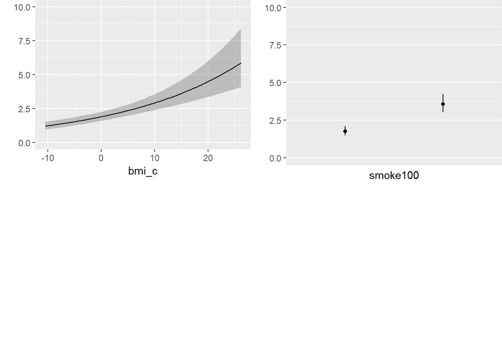
18.10.5 Summary of a Glm fit
summary(mod_poi_od_Glm_1) Effects Response : physhealth
Factor Low High Diff. Effect S.E. Lower 0.95 Upper 0.95
bmi_c -4.7165 3.1785 7.895 0.34154 0.05307 0.23745 0.44563
smoke100 0.0000 1.0000 1.000 0.70483 0.11835 0.47270 0.93697 18.10.6 Plot of the Summary
plot(summary(mod_poi_od_Glm_1))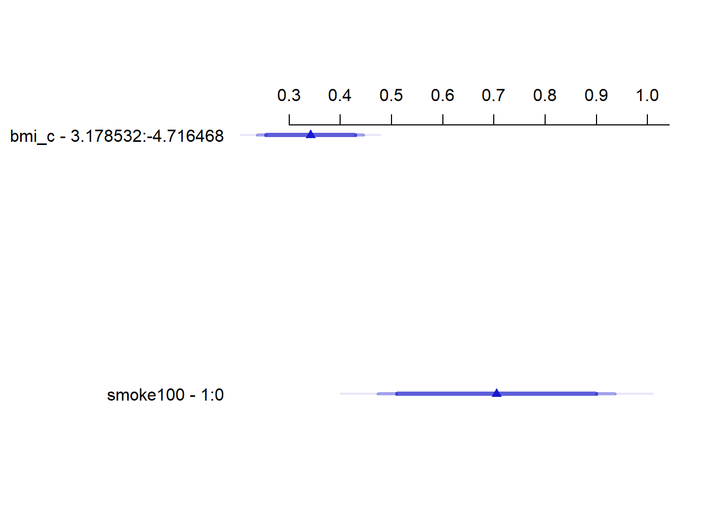
18.10.7 Nomogram of a Glm fit
plot(nomogram(mod_poi_od_Glm_1, fun = exp,
funlabel = "physhealth days"))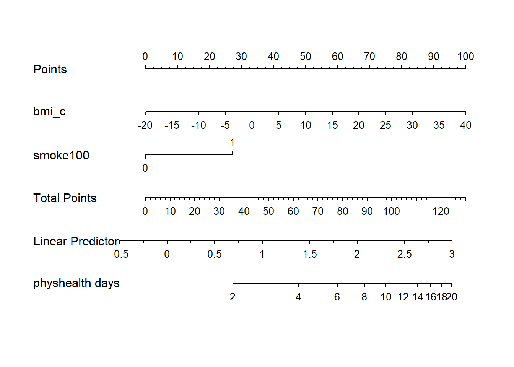
Note the use of fun=exp in both the ggplot of Predict and the nomogram. What’s that doing?
18.11 Negative Binomial Model
Another approach to dealing with overdispersion is to fit a negative binomial model15 to predict the log(physhealth) counts. This involves the fitting of an additional parameter, \(\theta\). That’s our dispersion parameter16
Sometimes, people will fit a model where \(\theta\) is known, for instance a geometric model (where \(\theta\) = 1), and then this can be directly plugged into a glm() fit, but the more common scenario is that we are going to iteratively estimate the \(\beta\) coefficients and \(\theta\). To do this, I’ll use the glm.nb function from the MASS package.
mod_nb1 <- MASS::glm.nb(physhealth ~ bmi_c + smoke100, link = log,
data = sm_oh_A_young)
summary(mod_nb1)
Call:
MASS::glm.nb(formula = physhealth ~ bmi_c + smoke100, data = sm_oh_A_young,
link = log, init.theta = 0.1343652349)
Deviance Residuals:
Min 1Q Median 3Q Max
-1.1087 -0.9046 -0.8288 -0.1662 2.2323
Coefficients:
Estimate Std. Error z value Pr(>|z|)
(Intercept) 0.61095 0.08804 6.939 3.94e-12 ***
bmi_c 0.04238 0.01010 4.198 2.70e-05 ***
smoke100 0.75724 0.14363 5.272 1.35e-07 ***
---
Signif. codes: 0 '***' 0.001 '**' 0.01 '*' 0.05 '.' 0.1 ' ' 1
(Dispersion parameter for Negative Binomial(0.1344) family taken to be 1)
Null deviance: 1132.9 on 1633 degrees of freedom
Residual deviance: 1081.9 on 1631 degrees of freedom
AIC: 5171.4
Number of Fisher Scoring iterations: 1
Theta: 0.13437
Std. Err.: 0.00743
2 x log-likelihood: -5163.36000 confint(mod_nb1)Waiting for profiling to be done... 2.5 % 97.5 %
(Intercept) 0.44260603 0.78783368
bmi_c 0.02436096 0.06150643
smoke100 0.47867108 1.0421972218.11.1 The Fitted Equation
The form of the model equation for a negative binomial regression is the same as that for Poisson regression.
log(physhealth) = 0.61 + 0.043 bmi_c + 0.756 smoke10018.11.2 Comparison with the (raw) Poisson model
To compare the negative binomial model to the Poisson model (without the overdispersion) we can use the logLik function to make a comparison. Note that the Poisson model is a subset of the negative binomial.
logLik(mod_nb1)'log Lik.' -2581.68 (df=4)logLik(mod_poiss1)'log Lik.' -7835.914 (df=3)pchisq(2 * (logLik(mod_nb1) - logLik(mod_poiss1)), df = 1, lower.tail = FALSE)'log Lik.' 0 (df=4)Here, the difference in the log likelihoods, multiplied by 2, is 10512 with 1 degree of freedom. This strongly suggests that the negative binomial model, estimating the dispersion parameter, is more appropriate than the raw Poisson model.
However, both the regression coefficients and the standard errors are rather similar to the quasi-Poisson and the sandwich-adjusted Poisson results above. Thus, in terms of predicted means, all three models give very similar results; the associated Wald tests also lead to the same conclusions.
18.11.3 Interpreting the Coefficients
There’s only a small change here from the Poisson models we saw previously.
- The constant term, 0.61, gives us the intercept of the regression - the prediction if
smoke100 = 0andbmi_c = 0. In this case, because we’ve centered BMI, it implies thatexp(0.61)= 1.84 is the predicted days of poorphyshealthfor a non-smoker with average BMI. - The coefficient of
bmi_c, 0.043, is the expected difference in count of poorphyshealthdays (on the log scale) for each additional kg/m2 of body mass index. The expected multiplicative increase is \(e^{0.043}\) = 1.044, corresponding to a 4.4% difference in the count. - The coefficient of
smoke100, 0.756, tells us that the predictive difference between those who have and who have not smoked 100 cigarettes can be found by multiplying thephyshealthcount by exp(0.756) = 2.13, yielding essentially a doubling of thephyshealthcount.
18.11.4 Interpretation of Coefficients in terms of IRRs
We might be interested in looking at incident rate ratios rather than coefficients. The coefficients have an additive effect in the log(y) scale, and the IRR have a multiplicative effect in the y scale. To do this, we can exponentiate our model coefficients. This also applies to the confidence intervals.
exp(coef(mod_nb1))(Intercept) bmi_c smoke100
1.842189 1.043292 2.132374 exp(confint(mod_nb1))Waiting for profiling to be done... 2.5 % 97.5 %
(Intercept) 1.556759 2.198628
bmi_c 1.024660 1.063437
smoke100 1.613928 2.835440As an example, then, the incident rate for smoke100 = 1 is 2.13 times the incident rate of physhealth days for the reference group (smoke100 = 0). The percent change in the incident rate of physhealth is a 4.3% increase for every kg/m2 increase in centered bmi.
18.11.5 Testing the Predictors
Again, we can use the Wald tests (z tests) provided with the negative binomial regression output.
As an alternative, we probably should not use the standard anova process, because the models there don’t re-estimate \(\theta\) for each new model, as the warning message below indicates.
anova(mod_nb1)Warning in anova.negbin(mod_nb1): tests made without re-estimating 'theta'Analysis of Deviance Table
Model: Negative Binomial(0.1344), link: log
Response: physhealth
Terms added sequentially (first to last)
Df Deviance Resid. Df Resid. Dev Pr(>Chi)
NULL 1633 1132.9
bmi_c 1 22.000 1632 1110.9 2.726e-06 ***
smoke100 1 29.004 1631 1081.9 7.224e-08 ***
---
Signif. codes: 0 '***' 0.001 '**' 0.01 '*' 0.05 '.' 0.1 ' ' 1So, instead, if we want, for instance to assess the significance of bmi_c, after smoke100 is already included in the model, we fit both models (with and without bmi_c) and then compare those models with a likelihood ratio test.
mod_nb1_without_bmi <- MASS::glm.nb(physhealth ~ smoke100,
link = log,
data = sm_oh_A_young)
anova(mod_nb1, mod_nb1_without_bmi)Likelihood ratio tests of Negative Binomial Models
Response: physhealth
Model theta Resid. df 2 x log-lik. Test df
1 smoke100 0.1300079 1632 -5186.181
2 bmi_c + smoke100 0.1343652 1631 -5163.360 1 vs 2 1
LR stat. Pr(Chi)
1
2 22.82102 1.778106e-06And we could compare the negative binomial models with and without smoke100 in a similar way.
mod_nb1_without_smoke <- MASS::glm.nb(physhealth ~ bmi_c,
link = log,
data = sm_oh_A_young)
anova(mod_nb1, mod_nb1_without_smoke)Likelihood ratio tests of Negative Binomial Models
Response: physhealth
Model theta Resid. df 2 x log-lik. Test df
1 bmi_c 0.1289940 1632 -5191.807
2 bmi_c + smoke100 0.1343652 1631 -5163.360 1 vs 2 1
LR stat. Pr(Chi)
1
2 28.44694 9.630178e-0818.11.6 Store fitted values and residuals
The broom package works in this case, too. We’ll look here at residuals and predicted (fitted) values on the scale of our physhealth response.
sm_nb1 <- augment(mod_nb1, sm_oh_A_young,
type.predict = "response",
type.residuals = "response")
sm_nb1 %>%
select(physhealth, .fitted, .resid) %>%
head() physhealth .fitted .resid
1 0 1.724956 -1.72495599
2 0 2.369399 -2.36939884
3 0 1.655481 -1.65548138
4 2 1.955507 0.04449258
5 4 4.759915 -0.75991504
6 6 1.556811 4.4431895018.11.7 Rootogram for Negative Binomial model
Here’s the rootogram for the negative binomial model.
rootogram(mod_nb1, max = 30)Again, the red curved line is the theoretical (negative binomial) fit. “Hanging” from each point on the red line is a bar, the height of which represents the difference between expected and observed counts. A bar hanging below 0 indicates underfitting. A bar hanging above 0 indicates overfitting. The counts have been transformed with a square root transformation to prevent smaller counts from getting obscured and overwhelmed by larger counts.
The match looks much better than the Poisson model, which is a sign that accounting for overdispersion is very important. Even this model badly underfits the number of 30 values, however.
18.11.8 Simulating what the Negative Binomial model predicts
We can use the parameters of the negative binomial model to simulate data17 and compare the simulated results to our observed physhealth data.
par(mfrow=c(1,2))
sm_oh_A_young$physhealth %>%
table() %>% barplot(main = "Observed physhealth")
set.seed(432122)
rnbinom(n = nrow(sm_oh_A_young),
size = mod_nb1$theta,
mu = exp(coef(mod_nb1)[1])) %>%
table() %>% barplot(main = "Simulated physhealth")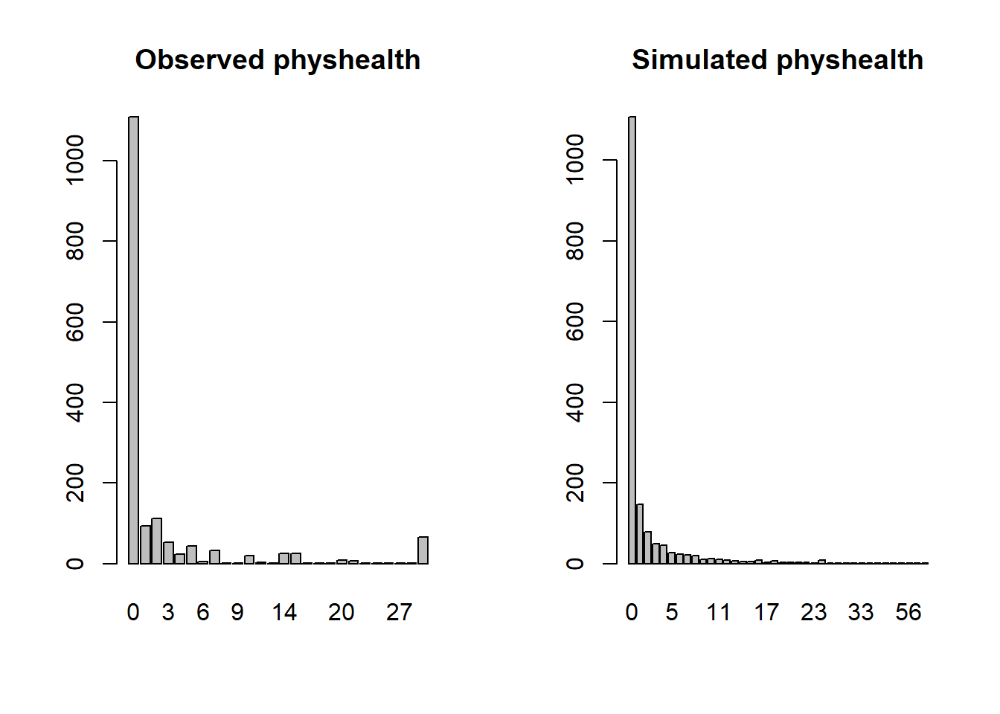
Again we see that the simulated data badly underfits the 30 values, and includes some predictions larger than 30.
18.11.9 Specify the R2 and log(likelihood) values
We can calculate the R2 as the squared correlation of the fitted values and the observed values.
# The correlation of observed and fitted values
(nb_r <- with(sm_nb1, cor(physhealth, .fitted)))[1] 0.220983# R-square
nb_r^2[1] 0.04883348The glance function in the broom package gives us model log(likelihood), among other summaries.
glance(mod_nb1) %>% round(3) null.deviance df.null logLik AIC BIC deviance df.residual
1 1132.866 1633 -2581.68 5171.36 5192.956 1081.862 1631Here, we have
| Model | Scale | R2 | log(likelihood) |
|---|---|---|---|
| Negative Binomial | log(physhealth) |
.049 | -2585.6 |
18.11.10 Check model assumptions
Here is a plot of residuals vs. fitted values on the original physhealth scale.
ggplot(sm_nb1, aes(x = .fitted, y = .resid)) +
geom_point() +
labs(title = "Residuals vs. Fitted `physhealth`",
subtitle = "Negative Binomial Regression model")Here are the glm diagnostic plots from the boot package.
glm.diag.plots(mod_nb1)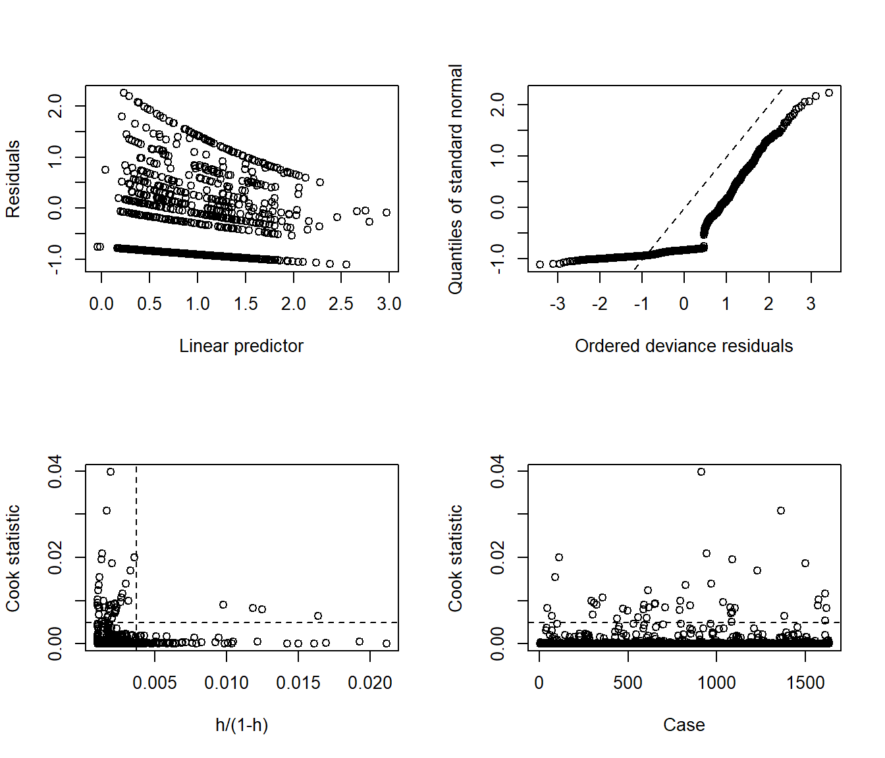
From the lower left plot, we see fewer points with large values of both Cook’s distance and leverage, so that’s a step in the right direction. The upper right plot still has some issues, but we’re closer to a desirable result there, too.
18.11.11 Predictions for Harry and Sally
The predictions from this negative binomial regression model will be only a little different than those from the Poisson models.
predict(mod_nb1, newdata = hs_data, se.fit = TRUE,
type = "response")$fit
1 2
6.001454 1.490406
$se.fit
1 2
0.8920031 0.1497235
$residual.scale
[1] 1As we’ve seen in the past, when we use response as the type, the predictions fall on the original physhealth scale. The prediction for Harry is 5.99 days, and for Sally is 1.49 days.
18.12 The Problem: Too Few Zeros
Remember that we observe more than 1000 zeros in our physhealth data.
sm_oh_A_young %>% count(physhealth == 0)# A tibble: 2 x 2
`physhealth == 0` n
<lgl> <int>
1 FALSE 525
2 TRUE 1109Let’s go back to our Poisson model (without overdispersion) for a moment, and concentrate on the zero values.
# predict expected mean physhealth for each subject
mu <- predict(mod_poiss1, type = "response")
# sum the probabilities of a zero count for each mean
exp <- sum(dpois(x = 0, lambda = mu))
# predicted number of zeros from Poisson model
round(exp)[1] 190As we’ve seen previously, we’re severely underfitting zero counts. We can compare the observed number of zero physhealth results to the expected number of zero values from the likelihood-based models.
round(c("Obs" = sum(sm_oh_A_young$physhealth == 0),
"Poisson" = sum(dpois(0, fitted(mod_poiss1))),
"NB" = sum(dnbinom(0, mu = fitted(mod_nb1), size = mod_nb1$theta))),0) Obs Poisson NB
1109 190 1101 There are at least two ways to tackle this problem.
- Fitting a model which deliberately inflates the number of zeros that are fitted
- Fitting a hurdle model
We’ll look at those options, next.
18.13 The Zero-Inflated Poisson Regression Model
The zero-inflated Poisson or (ZIP) model is used to describe count data with an excess of zero counts18. The model posits that there are two processes involved:
- a logit model is used to predict excess zeros
- while a Poisson model is used to predict the counts, generally
The pscl package is used here, which can conflict with the countreg package we used to fit rootograms. That’s why I’m loading it here.
library(pscl)Classes and Methods for R developed in the
Political Science Computational Laboratory
Department of Political Science
Stanford University
Simon Jackman
hurdle and zeroinfl functions by Achim Zeileis
Attaching package: 'pscl'The following objects are masked from 'package:countreg':
hurdle, hurdle.control, hurdletest, zeroinfl, zeroinfl.controlTo run the zero-inflated Poisson model, we use the following:
mod_zip1 <- zeroinfl(physhealth ~ bmi_c + smoke100,
data = sm_oh_A_young)
summary(mod_zip1)
Call:
zeroinfl(formula = physhealth ~ bmi_c + smoke100, data = sm_oh_A_young)
Pearson residuals:
Min 1Q Median 3Q Max
-1.4159 -0.6461 -0.5315 -0.2562 11.0564
Count model coefficients (poisson with log link):
Estimate Std. Error z value Pr(>|z|)
(Intercept) 1.897651 0.022696 83.613 <2e-16 ***
bmi_c 0.013984 0.001698 8.235 <2e-16 ***
smoke100 0.437642 0.030107 14.536 <2e-16 ***
Zero-inflation model coefficients (binomial with logit link):
Estimate Std. Error z value Pr(>|z|)
(Intercept) 0.921514 0.069911 13.181 < 2e-16 ***
bmi_c -0.050103 0.007793 -6.430 1.28e-10 ***
smoke100 -0.416061 0.110166 -3.777 0.000159 ***
---
Signif. codes: 0 '***' 0.001 '**' 0.01 '*' 0.05 '.' 0.1 ' ' 1
Number of iterations in BFGS optimization: 14
Log-likelihood: -4178 on 6 Dfconfint(mod_zip1) 2.5 % 97.5 %
count_(Intercept) 1.85316852 1.94213386
count_bmi_c 0.01065621 0.01731264
count_smoke100 0.37863312 0.49664993
zero_(Intercept) 0.78449191 1.05853706
zero_bmi_c -0.06537671 -0.03482990
zero_smoke100 -0.63198306 -0.20013969The output describes two separate regression models. Below the model call, we see information on a Poisson regression model. Then we see another block describing the inflation model.
Each predictor (bmi_c and smoke100) appears to be statistically significant in each part of the model.
18.13.1 Comparison to a null model
To show that this model fits better than the null model (the model with intercept only), we can compare them directly with a chi-squared test. Since we have two predictors in the full model, the degrees of freedom for this test is 2.
mod_zipnull <- zeroinfl(physhealth ~ 1,
data = sm_oh_A_young)
summary(mod_zipnull)
Call:
zeroinfl(formula = physhealth ~ 1, data = sm_oh_A_young)
Pearson residuals:
Min 1Q Median 3Q Max
-0.6355 -0.6355 -0.6355 -0.1720 6.3162
Count model coefficients (poisson with log link):
Estimate Std. Error z value Pr(>|z|)
(Intercept) 2.14401 0.01495 143.4 <2e-16 ***
Zero-inflation model coefficients (binomial with logit link):
Estimate Std. Error z value Pr(>|z|)
(Intercept) 0.74753 0.05298 14.11 <2e-16 ***
---
Signif. codes: 0 '***' 0.001 '**' 0.01 '*' 0.05 '.' 0.1 ' ' 1
Number of iterations in BFGS optimization: 9
Log-likelihood: -4351 on 2 Dfpchisq(2 * (logLik(mod_zip1) - logLik(mod_zipnull)), df = 2, lower.tail = FALSE)'log Lik.' 1.470287e-75 (df=6)18.13.2 Comparison to a Poisson Model with the Vuong test
vuong(mod_zip1, mod_poiss1)Vuong Non-Nested Hypothesis Test-Statistic:
(test-statistic is asymptotically distributed N(0,1) under the
null that the models are indistinguishible)
-------------------------------------------------------------
Vuong z-statistic H_A p-value
Raw 15.54767 model1 > model2 < 2.22e-16
AIC-corrected 15.53492 model1 > model2 < 2.22e-16
BIC-corrected 15.50049 model1 > model2 < 2.22e-16Certainly, the ZIP model is a significant improvement over the standard Poisson model, as the Vuong test reveals.
18.13.3 The Fitted Equation
The form of the model equation for a zero-inflated Poisson regression requires us to take two separate models into account. First we have a logistic regression model to predict the log odds of zero physhealth days…
logit(physhealth = 0) = 0.919 - 0.051 bmi_c - 0.411 smoke100That takes care of the extra zeros. Then, to predict the number of physhealth days, we have:
log(physhealth) = 1.90 + 0.014 bmi_c + 0.441 smoke100which may produce some additional zero count estimates.
18.13.4 Interpreting the Coefficients
We can exponentiate the logistic regression coefficients to obtain results in terms of odds ratios for that model, and that can be of some help in understanding the process behind excess zeros.
Also, exponentiating the coefficients of the count model help us describe those counts on the original scale of physhealth.
exp(coef(mod_zip1))count_(Intercept) count_bmi_c count_smoke100 zero_(Intercept)
6.6702090 1.0140827 1.5490495 2.5130936
zero_bmi_c zero_smoke100
0.9511312 0.6596398 For example,
- in the model for
physhealth= 0, the odds ofphyshealth= 0 are 66% as high for subjects withsmoke100= 1 as for non-smokers with the same BMI. - in the Poisson model for
physhealth, thephyshealthcount is estimated to increase by 1.55 for smokers as compared to non-smokers with the same BMI.
18.13.5 Testing the Predictors
We can test the model with and without bmi_c, for example, by fitting the model both ways, and comparing the results with either a Wald or Likelihood Ratio test, each of which is available in the lmtest package.
mod_zip1_nobmi <- zeroinfl(physhealth ~ smoke100,
data = sm_oh_A_young)
lmtest::waldtest(mod_zip1, mod_zip1_nobmi)Wald test
Model 1: physhealth ~ bmi_c + smoke100
Model 2: physhealth ~ smoke100
Res.Df Df Chisq Pr(>Chisq)
1 1628
2 1630 -2 109.3 < 2.2e-16 ***
---
Signif. codes: 0 '***' 0.001 '**' 0.01 '*' 0.05 '.' 0.1 ' ' 1lmtest::lrtest(mod_zip1, mod_zip1_nobmi)Likelihood ratio test
Model 1: physhealth ~ bmi_c + smoke100
Model 2: physhealth ~ smoke100
#Df LogLik Df Chisq Pr(>Chisq)
1 6 -4178.5
2 4 -4232.0 -2 106.96 < 2.2e-16 ***
---
Signif. codes: 0 '***' 0.001 '**' 0.01 '*' 0.05 '.' 0.1 ' ' 118.13.6 Store fitted values and residuals
The broom package does not work with the zeroinfl tool. So we need to build up the fitted values and residuals ourselves.
sm_zip1 <- sm_oh_A_young %>%
mutate(fitted = fitted(mod_zip1, type = "response"),
resid = resid(mod_zip1, type = "response"))
sm_zip1 %>%
dplyr::select(physhealth, fitted, resid) %>%
head()# A tibble: 6 x 3
physhealth fitted resid
<int> <dbl> <dbl>
1 0 1.76 -1.76
2 0 2.53 -2.53
3 0 1.67 -1.67
4 2 2.04 -0.0357
5 4 5.02 -1.02
6 6 1.55 4.45 18.13.7 Modeled Number of Zero Counts
The zero-inflated model is designed to perfectly match the number of observed zeros. We can compare the observed number of zero physhealth results to the expected number of zero values from the likelihood-based models.
round(c("Obs" = sum(sm_oh_A_young$physhealth == 0),
"Poisson" = sum(dpois(0, fitted(mod_poiss1))),
"NB" = sum(dnbinom(0, mu = fitted(mod_nb1), size = mod_nb1$theta)),
"ZIP" = sum(predict(mod_zip1, type = "prob")[,1])), 0) Obs Poisson NB ZIP
1109 190 1101 1109 18.13.8 Rootogram for ZIP model
Here’s the rootogram for the zero-inflated Poisson model.
countreg::rootogram(mod_zip1, max = 30)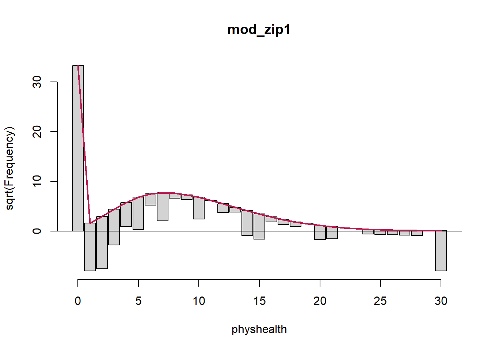
The zero frequencies are perfectly matched here, but we can see that counts of 1 and 2 are now substantially underfit, and values between 6 and 13 are overfit.
18.13.9 Specify the R2 and log (likelihood) values
We can calculate a proxy for R2 as the squared correlation of the fitted values and the observed values.
# The correlation of observed and fitted values
(zip_r <- with(sm_zip1, cor(physhealth, fitted)))[1] 0.2236014# R-square
zip_r^2[1] 0.04999758logLik(mod_zip1)'log Lik.' -4178.496 (df=6)Here, we have
| Model | Scale | R2 | log(likelihood) |
|---|---|---|---|
| Zero-Inflated Poisson | Complex: log(physhealth) |
.050 | -4184.1 |
18.13.10 Check model assumptions
Here is a plot of residuals vs. fitted values on the original physhealth scale.
ggplot(sm_zip1, aes(x = fitted, y = resid)) +
geom_point() +
labs(title = "Residuals vs. Fitted `physhealth`",
subtitle = "Zero-Inflated Poisson Regression model")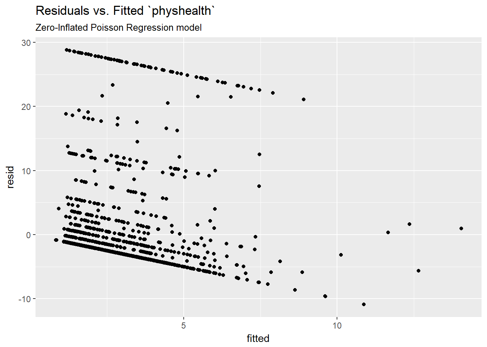
18.13.11 Predictions for Harry and Sally
The predictions from this ZIP regression model are obtained as follows…
predict(mod_zip1, newdata = hs_data, type = "response") 1 2
5.928536 1.470896 As we’ve seen in the past, when we use response as the type, the predictions fall on the original physhealth scale. The prediction for Harry is 5.92 days, and for Sally is 1.47 days.
18.14 The Zero-Inflated Negative Binomial Regression Model
As an alternative to the ZIP model, we might consider a zero-inflated negative binomial regression19. This will involve a logistic regression to predict the probability of a 0, and then a negative binomial model to describe the counts of physhealth.
To run the zero-inflated negative binomial model, we use the following code:
mod_zinb1 <- zeroinfl(physhealth ~ bmi_c + smoke100,
dist = "negbin", data = sm_oh_A_young)
summary(mod_zinb1)
Call:
zeroinfl(formula = physhealth ~ bmi_c + smoke100, data = sm_oh_A_young,
dist = "negbin")
Pearson residuals:
Min 1Q Median 3Q Max
-0.5432 -0.3914 -0.3471 -0.1542 7.7462
Count model coefficients (negbin with log link):
Estimate Std. Error z value Pr(>|z|)
(Intercept) 1.353151 0.126131 10.728 < 2e-16 ***
bmi_c 0.020419 0.007825 2.609 0.00907 **
smoke100 0.573530 0.135112 4.245 2.19e-05 ***
Log(theta) -1.028636 0.172175 -5.974 2.31e-09 ***
Zero-inflation model coefficients (binomial with logit link):
Estimate Std. Error z value Pr(>|z|)
(Intercept) 0.04144 0.20698 0.200 0.8413
bmi_c -0.06160 0.01354 -4.550 5.37e-06 ***
smoke100 -0.34373 0.17023 -2.019 0.0435 *
---
Signif. codes: 0 '***' 0.001 '**' 0.01 '*' 0.05 '.' 0.1 ' ' 1
Theta = 0.3575
Number of iterations in BFGS optimization: 25
Log-likelihood: -2564 on 7 Dfconfint(mod_zinb1) 2.5 % 97.5 %
count_(Intercept) 1.105938639 1.60036316
count_bmi_c 0.005081859 0.03575643
count_smoke100 0.308714260 0.83834496
zero_(Intercept) -0.364229869 0.44711077
zero_bmi_c -0.088141789 -0.03506528
zero_smoke100 -0.677368528 -0.0100959418.14.1 Comparison to a null model
To show that this model fits better than the null model (the model with intercept only), we can compare them directly with a chi-squared test. Since we have two predictors in the full model, the degrees of freedom for this test is 2.
mod_zinbnull <- zeroinfl(physhealth ~ 1, dist = "negbin",
data = sm_oh_A_young)
summary(mod_zinbnull)
Call:
zeroinfl(formula = physhealth ~ 1, data = sm_oh_A_young, dist = "negbin")
Pearson residuals:
Min 1Q Median 3Q Max
-0.3700 -0.3700 -0.3700 -0.1002 3.6775
Count model coefficients (negbin with log link):
Estimate Std. Error z value Pr(>|z|)
(Intercept) 1.5356 0.1499 10.246 < 2e-16 ***
Log(theta) -1.3053 0.2330 -5.603 2.1e-08 ***
Zero-inflation model coefficients (binomial with logit link):
Estimate Std. Error z value Pr(>|z|)
(Intercept) -0.3660 0.3352 -1.092 0.275
---
Signif. codes: 0 '***' 0.001 '**' 0.01 '*' 0.05 '.' 0.1 ' ' 1
Theta = 0.2711
Number of iterations in BFGS optimization: 13
Log-likelihood: -2603 on 3 Dfpchisq(2 * (logLik(mod_nb1) - logLik(mod_zinbnull)), df = 2, lower.tail = FALSE)'log Lik.' 4.170115e-10 (df=4)18.14.2 Comparison to a Negative Binomial Model: Vuong test
vuong(mod_zinb1, mod_nb1)Vuong Non-Nested Hypothesis Test-Statistic:
(test-statistic is asymptotically distributed N(0,1) under the
null that the models are indistinguishible)
-------------------------------------------------------------
Vuong z-statistic H_A p-value
Raw 3.113058 model1 > model2 0.0009258
AIC-corrected 2.574484 model1 > model2 0.0050195
BIC-corrected 1.120661 model1 > model2 0.1312160The zero-inflated negative binomial model is a significant improvement over the standard negative binomial model according to the the raw or AIC-corrected Vuong tests, but not according to the BIC-corrected test.
18.14.3 The Fitted Equation
Like the ZIP, the zero-inflated negative binomial regression also requires us to take two separate models into account. First we have a logistic regression model to predict the log odds of zero physhealth days…
logit(physhealth = 0) = 0.044 - 0.062 bmi_c - 0.337 smoke100That takes care of the extra zeros. Then, to predict the number of physhealth days, we have:
log(physhealth) = 1.36 + 0.020 bmi_c + 0.575 smoke100and there’s a \(\theta\) term, which is estimated as exp(-1.023) or 0.36, and this negative binomial regression model may also produce some additional zero count estimates.
18.14.4 Interpreting the Coefficients
As with the zip, we can exponentiate the logistic regression coefficients to obtain results in terms of odds ratios for that model, and that can be of some help in understanding the process behind excess zeros.
exp(coef(mod_zinb1))count_(Intercept) count_bmi_c count_smoke100 zero_(Intercept)
3.8695991 1.0206290 1.7745194 1.0423111
zero_bmi_c zero_smoke100
0.9402556 0.7091188 For example,
- in the model for
physhealth= 0, the odds ofphyshealth= 0 are 71.4% as high for subjects withsmoke100= 1 as for non-smokers with the same BMI.
Interpreting the negative binomial piece works the same way as it did in the negative binomial regression.
18.14.5 Testing the Predictors
We can test the model with and without bmi_c, for example, by fitting the model both ways, and comparing the results with either a Wald or Likelihood Ratio test, each of which is available in the lmtest package.
mod_zinb1_nobmi <- zeroinfl(physhealth ~ smoke100,
dist = "negbin",
data = sm_oh_A_young)
lmtest::waldtest(mod_zinb1, mod_zinb1_nobmi)Wald test
Model 1: physhealth ~ bmi_c + smoke100
Model 2: physhealth ~ smoke100
Res.Df Df Chisq Pr(>Chisq)
1 1627
2 1629 -2 33.611 5.028e-08 ***
---
Signif. codes: 0 '***' 0.001 '**' 0.01 '*' 0.05 '.' 0.1 ' ' 1lmtest::lrtest(mod_zinb1, mod_zinb1_nobmi)Likelihood ratio test
Model 1: physhealth ~ bmi_c + smoke100
Model 2: physhealth ~ smoke100
#Df LogLik Df Chisq Pr(>Chisq)
1 7 -2564.3
2 5 -2587.1 -2 45.442 1.357e-10 ***
---
Signif. codes: 0 '***' 0.001 '**' 0.01 '*' 0.05 '.' 0.1 ' ' 118.14.6 Store fitted values and residuals
Again, we need to build up the fitted values and residuals without the broom package.
sm_zinb1 <- sm_oh_A_young %>%
mutate(fitted = fitted(mod_zinb1, type = "response"),
resid = resid(mod_zinb1, type = "response"))
sm_zip1 %>%
dplyr::select(physhealth, fitted, resid) %>%
head()# A tibble: 6 x 3
physhealth fitted resid
<int> <dbl> <dbl>
1 0 1.76 -1.76
2 0 2.53 -2.53
3 0 1.67 -1.67
4 2 2.04 -0.0357
5 4 5.02 -1.02
6 6 1.55 4.45 18.14.7 Modeled Number of Zero Counts
Once again, we can compare the observed number of zero physhealth results to the expected number of zero values from the likelihood-based models.
round(c("Obs" = sum(sm_oh_A_young$physhealth == 0),
"Poisson" = sum(dpois(0, fitted(mod_poiss1))),
"NB" = sum(dnbinom(0, mu = fitted(mod_nb1), size = mod_nb1$theta)),
"ZIP" = sum(predict(mod_zip1, type = "prob")[,1]),
"ZINB" = sum(predict(mod_zinb1, type = "prob")[,1])),0) Obs Poisson NB ZIP ZINB
1109 190 1101 1109 1111 So, the Poisson model is clearly inappropriate, but the zero-inflated (Poisson and NB) and the negative binomial model all give reasonable fits in this regard.
18.14.8 Rootogram for Zero-Inflated Negative Binomial model
Here’s the rootogram for the zero-inflated negative binomial model.
countreg::rootogram(mod_zinb1, max = 30)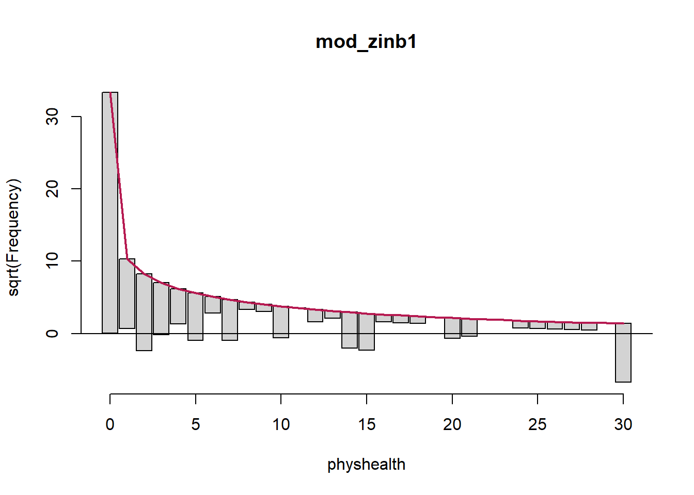
As in the ZIP model, the zero frequencies are perfectly matched here, but we can see that counts of 1 and 2 are now closer to the data we observe than in the ZIP model. We are still substantially underfitting values of 30.
18.14.9 Specify the R2 and log (likelihood) values
We can calculate a proxy for R2 as the squared correlation of the fitted values and the observed values.
# The correlation of observed and fitted values
(zinb_r <- with(sm_zinb1, cor(physhealth, fitted)))[1] 0.2218276# R-square
zinb_r^2[1] 0.04920749logLik(mod_zinb1)'log Lik.' -2564.34 (df=7)Here, we have
| Model | Scale | R2 | log(likelihood) |
|---|---|---|---|
| Zero-Inflated Negative Binomial | Complex: log(physhealth) |
.049 | -2567.8 |
18.14.10 Check model assumptions
Here is a plot of residuals vs. fitted values on the original physhealth scale.
ggplot(sm_zinb1, aes(x = fitted, y = resid)) +
geom_point() +
labs(title = "Residuals vs. Fitted `physhealth`",
subtitle = "Zero-Inflated Negative Binomial Regression model")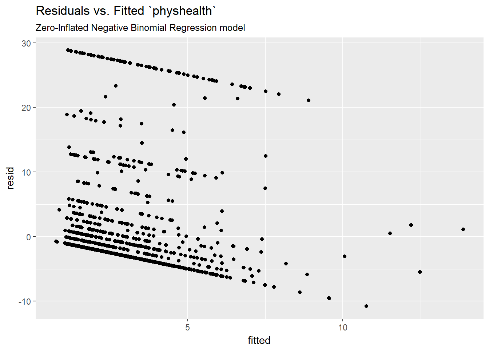
18.14.11 Predictions for Harry and Sally
The predictions from this zero-inflated negative binomial regression model are obtained as follows…
predict(mod_zinb1, newdata = hs_data, type = "response") 1 2
6.019361 1.444829 As we’ve seen in the past, when we use response as the type, the predictions fall on the original physhealth scale. The prediction for Harry is 6.01 days, and for Sally is 1.45 days.
18.15 A “hurdle” model (with Poisson)
Much of the discussion here of hurdle models comes from Clay Ford at the University of Virginia20. Ford describes a hurdle model as follows:
The hurdle model is a two-part model that specifies one process for zero counts and another process for positive counts. The idea is that positive counts occur once a threshold is crossed, or put another way, a hurdle is cleared. If the hurdle is not cleared, then we have a count of 0.
The first part of the model is typically a binary logit model. This models whether an observation takes a positive count or not. The second part of the model is usually a truncated Poisson or Negative Binomial model. Truncated means we’re only fitting positive counts. If we were to fit a hurdle model to our [medicare] data, the interpretation would be that one process governs whether a patient visits a doctor or not, and another process governs how many visits are made.
To fit a hurdle model, we’ll use the hurdle function in the pscl package.
mod_hur1 <- hurdle(physhealth ~ bmi_c + smoke100,
dist = "poisson", zero.dist = "binomial",
data = sm_oh_A_young)
summary(mod_hur1)
Call:
hurdle(formula = physhealth ~ bmi_c + smoke100, data = sm_oh_A_young,
dist = "poisson", zero.dist = "binomial")
Pearson residuals:
Min 1Q Median 3Q Max
-1.4170 -0.6460 -0.5316 -0.2561 11.0526
Count model coefficients (truncated poisson with log link):
Estimate Std. Error z value Pr(>|z|)
(Intercept) 1.897676 0.022696 83.612 <2e-16 ***
bmi_c 0.013985 0.001698 8.235 <2e-16 ***
smoke100 0.437649 0.030107 14.537 <2e-16 ***
Zero hurdle model coefficients (binomial with logit link):
Estimate Std. Error z value Pr(>|z|)
(Intercept) -0.923456 0.069872 -13.216 < 2e-16 ***
bmi_c 0.050172 0.007791 6.440 1.2e-10 ***
smoke100 0.417888 0.110144 3.794 0.000148 ***
---
Signif. codes: 0 '***' 0.001 '**' 0.01 '*' 0.05 '.' 0.1 ' ' 1
Number of iterations in BFGS optimization: 14
Log-likelihood: -4178 on 6 Dfconfint(mod_hur1) 2.5 % 97.5 %
count_(Intercept) 1.85319158 1.94215943
count_bmi_c 0.01065671 0.01731347
count_smoke100 0.37864083 0.49665711
zero_(Intercept) -1.06040337 -0.78650834
zero_bmi_c 0.03490142 0.06544259
zero_smoke100 0.20201037 0.63376638We are using the default settings here, using the same predictors for both models:
- a Binomial model to predict the probability of
physhealth= 0 given our predictors, as specified by thezero.distargument in thehurdlefunction, and - a (truncated) Poisson model to predict the positive-count of
physhealthgiven those same predictors, as specified by thedistargument in thehurdlefunction.
18.15.1 Comparison to a null model
To show that this model fits better than the null model (the model with intercept only), we can compare them directly with a chi-squared test. Since we have two predictors in the full model, the degrees of freedom for this test is 2.
mod_hurnull <- hurdle(physhealth ~ 1, dist = "poisson",
zero.dist = "binomial",
data = sm_oh_A_young)
summary(mod_hurnull)
Call:
hurdle(formula = physhealth ~ 1, data = sm_oh_A_young, dist = "poisson",
zero.dist = "binomial")
Pearson residuals:
Min 1Q Median 3Q Max
-0.6355 -0.6355 -0.6355 -0.1720 6.3162
Count model coefficients (truncated poisson with log link):
Estimate Std. Error z value Pr(>|z|)
(Intercept) 2.14401 0.01495 143.4 <2e-16 ***
Zero hurdle model coefficients (binomial with logit link):
Estimate Std. Error z value Pr(>|z|)
(Intercept) -0.74782 0.05298 -14.12 <2e-16 ***
---
Signif. codes: 0 '***' 0.001 '**' 0.01 '*' 0.05 '.' 0.1 ' ' 1
Number of iterations in BFGS optimization: 8
Log-likelihood: -4351 on 2 Dfpchisq(2 * (logLik(mod_hur1) - logLik(mod_hurnull)), df = 2, lower.tail = FALSE)'log Lik.' 1.46309e-75 (df=6)18.15.2 Comparison to a Poisson Model: Vuong test
vuong(mod_hur1, mod_poiss1)Vuong Non-Nested Hypothesis Test-Statistic:
(test-statistic is asymptotically distributed N(0,1) under the
null that the models are indistinguishible)
-------------------------------------------------------------
Vuong z-statistic H_A p-value
Raw 15.54734 model1 > model2 < 2.22e-16
AIC-corrected 15.53459 model1 > model2 < 2.22e-16
BIC-corrected 15.50016 model1 > model2 < 2.22e-16The hurdle model is a significant improvement over the standard Poisson model according to this test.
18.15.3 Comparison to a Zero-Inflated Poisson Model: Vuong test
Is the hurdle model comparable to the zero-inflated Poisson?
vuong(mod_hur1, mod_zip1)Vuong Non-Nested Hypothesis Test-Statistic:
(test-statistic is asymptotically distributed N(0,1) under the
null that the models are indistinguishible)
-------------------------------------------------------------
Vuong z-statistic H_A p-value
Raw 0.4811757 model1 > model2 0.3152
AIC-corrected 0.4811757 model1 > model2 0.3152
BIC-corrected 0.4811757 model1 > model2 0.3152The hurdle model is not a significant improvement over the zero-inflated Poisson model according to this test.
18.15.4 The Fitted Equation
The form of the model equation for this hurdle also requires us to take two separate models into account. First we have a logistic regression model to predict the log odds of zero physhealth days…
logit(physhealth = 0) = 0.921 - 0.051 bmi_c - 0.413 smoke100That takes care of the zeros. Then, to predict the number of physhealth days, we use the following truncated Poisson model:
log(physhealth) = 1.90 + 0.014 bmi_c + 0.441 smoke100which is truncated to produce only estimates greater than zero.
18.15.5 Interpreting the Coefficients
We can exponentiate the logistic regression coefficients to obtain results in terms of odds ratios for that model, and that can be of some help in understanding the process behind excess zeros.
Also, exponentiating the coefficients of the count model help us describe those counts on the original scale of physhealth.
exp(coef(mod_hur1))count_(Intercept) count_bmi_c count_smoke100 zero_(Intercept)
6.6703712 1.0140833 1.5490611 0.3971442
zero_bmi_c zero_smoke100
1.0514519 1.5187511 For example,
- in the model for
physhealth= 0, the odds ofphyshealth= 0 are 151% as high for subjects withsmoke100= 1 as for non-smokers with the same BMI. - in the Poisson model for
physhealth, thephyshealthcount is estimated to increase by 1.55 for smokers as compared to non-smokers with the same BMI.
18.15.6 Testing the Predictors
We can test the model with and without bmi_c, for example, by fitting the model both ways, and comparing the results with either a Wald or Likelihood Ratio test, each of which is available in the lmtest package.
mod_hur1_nobmi <- hurdle(physhealth ~ smoke100,
dist = "poisson",
zero.dist = "binomial",
data = sm_oh_A_young)
lmtest::waldtest(mod_hur1, mod_hur1_nobmi)Wald test
Model 1: physhealth ~ bmi_c + smoke100
Model 2: physhealth ~ smoke100
Res.Df Df Chisq Pr(>Chisq)
1 1628
2 1630 -2 109.29 < 2.2e-16 ***
---
Signif. codes: 0 '***' 0.001 '**' 0.01 '*' 0.05 '.' 0.1 ' ' 1lmtest::lrtest(mod_hur1, mod_hur1_nobmi)Likelihood ratio test
Model 1: physhealth ~ bmi_c + smoke100
Model 2: physhealth ~ smoke100
#Df LogLik Df Chisq Pr(>Chisq)
1 6 -4178.5
2 4 -4232.0 -2 106.97 < 2.2e-16 ***
---
Signif. codes: 0 '***' 0.001 '**' 0.01 '*' 0.05 '.' 0.1 ' ' 118.15.7 Store fitted values and residuals
The broom package does not work with the hurdle class of models. Again we need to build up the fitted values and residuals ourselves.
sm_hur1 <- sm_oh_A_young %>%
mutate(fitted = fitted(mod_hur1, type = "response"),
resid = resid(mod_hur1, type = "response"))
sm_hur1 %>%
dplyr::select(physhealth, fitted, resid) %>%
head()# A tibble: 6 x 3
physhealth fitted resid
<int> <dbl> <dbl>
1 0 1.76 -1.76
2 0 2.53 -2.53
3 0 1.67 -1.67
4 2 2.04 -0.0353
5 4 5.02 -1.02
6 6 1.55 4.45 18.15.8 Modeled Number of Zero Counts
Once again, we can compare the observed number of zero physhealth results to the expected number of zero values from the likelihood-based models.
round(c("Obs" = sum(sm_oh_A_young$physhealth == 0),
"Poisson" = sum(dpois(0, fitted(mod_poiss1))),
"NB" = sum(dnbinom(0, mu = fitted(mod_nb1), size = mod_nb1$theta)),
"ZIP" = sum(predict(mod_zip1, type = "prob")[,1]),
"ZINB" = sum(predict(mod_zinb1, type = "prob")[,1]),
"Hurdle" = sum(predict(mod_hur1, type = "prob")[,1])),0) Obs Poisson NB ZIP ZINB Hurdle
1109 190 1101 1109 1111 1109 The hurdle model does about as well as the negative binomial and zero-inflated models. All but the Poisson give reasonable fits in this regard.
18.15.9 Rootogram for Hurdle Model
countreg::rootogram(mod_hur1, max = 30)The results are still not perfect, of course. In fitting the zeros exactly, we’re underfitting counts of 1, 2, and 30, and overfitting many of the counts between 6 and 20. We still have a problem here with overdispersion. That’s why we’ll consider a hurdle model with a negative binomial regression for the counts in a moment.
18.15.10 Understanding the Modeled Counts in Detail
The expected mean count uses both parts of the hurdle model. Mathematically, we want…
\[ E[y | {\bf x}] = \frac{1 - f_1(0 | {\bf x})}{1 - f_2(0 | {\bf x})} \mu_2({\bf x}) \]
where
- our count of
physhealthis \(y\) - our predictors are represented by x
- and the expected count is the product of a ratio and a mean.
The ratio is the probability of a non-zero in the first process divided the probability of a non-zero in the second untruncated process. The f symbols represent distributions. Recall these are logistic and Poisson, respectively, by default but can be others. The mean is for the untruncated version of the positive-count process.
If we want to see the expected hurdle counts, we can get them using some clever applications of the predict function.
The first six expected mean counts (\(E[y | {\bf x}]\) from the equation above) are:
head(predict(mod_hur1, type = "response")) 1 2 3 4 5 6
1.756341 2.527945 1.671933 2.035348 5.018026 1.551978 The ratio of non-zero probabilities, \(\frac{1 - f_1(0 | {\bf x})}{1 - f_2(0 | {\bf x})}\), from the mathematical expression above can be extracted by:
head(predict(mod_hur1, type = "zero")) 1 2 3 4 5 6
0.2690804 0.3487780 0.2596470 0.2991808 0.5499740 0.2459557 The mean for the untruncated process, \(\mu_2({\bf x})\), can also be obtained by:
head(predict(mod_hur1, type = "count")) 1 2 3 4 5 6
6.527200 7.248006 6.439253 6.803070 9.124116 6.309990 and we can multiply these last two pieces together to verify that they match our expected hurdle counts.
head(predict(mod_hur1, type = "zero") * predict(mod_hur1, type = "count"),5) 1 2 3 4 5
1.756341 2.527945 1.671933 2.035348 5.018026 18.15.11 Specify the R2 and log (likelihood) values
We can calculate a proxy for R2 as the squared correlation of the fitted values and the observed values.
# The correlation of observed and fitted values
(hur1_r <- with(sm_hur1, cor(physhealth, fitted)))[1] 0.2235982# R-square
hur1_r^2[1] 0.04999615logLik(mod_hur1)'log Lik.' -4178.491 (df=6)Here, we have
| Model | Scale | R2 | log(likelihood) |
|---|---|---|---|
| Hurdle Model (Poisson) | Complex: log(physhealth) |
.050 | -4184.1 |
18.15.12 Check model assumptions
Here is a plot of residuals vs. fitted values on the original physhealth scale.
ggplot(sm_hur1, aes(x = fitted, y = resid)) +
geom_point() +
labs(title = "Residuals vs. Fitted `physhealth`",
subtitle = "Hurdle model with Poisson counts")18.15.13 Predictions for Harry and Sally
The predictions from this zero-inflated negative binomial regression model are obtained as follows…
predict(mod_hur1, newdata = hs_data, type = "response") 1 2
5.930506 1.471289 As we’ve seen in the past, when we use response as the type, the predictions fall on the original physhealth scale. The prediction for Harry is 5.93 days, and for Sally is 1.47 days.
18.16 A “hurdle” model (with negative binomial for overdispersion)
Let’s account for overdispersion better with a negative binomial model for the counts in our hurdle model. We specify that the positive-count process be fit with this NB model using dist = negbin.
mod_hur_nb1 <- hurdle(physhealth ~ bmi_c + smoke100,
dist = "negbin", zero.dist = "binomial",
data = sm_oh_A_young)
summary(mod_hur_nb1)
Call:
hurdle(formula = physhealth ~ bmi_c + smoke100, data = sm_oh_A_young,
dist = "negbin", zero.dist = "binomial")
Pearson residuals:
Min 1Q Median 3Q Max
-0.5763 -0.3843 -0.3424 -0.1548 7.4930
Count model coefficients (truncated negbin with log link):
Estimate Std. Error z value Pr(>|z|)
(Intercept) 1.305260 0.144512 9.032 < 2e-16 ***
bmi_c 0.018524 0.008131 2.278 0.0227 *
smoke100 0.573519 0.138747 4.134 3.57e-05 ***
Log(theta) -1.123030 0.206483 -5.439 5.36e-08 ***
Zero hurdle model coefficients (binomial with logit link):
Estimate Std. Error z value Pr(>|z|)
(Intercept) -0.923456 0.069872 -13.216 < 2e-16 ***
bmi_c 0.050172 0.007791 6.440 1.2e-10 ***
smoke100 0.417888 0.110144 3.794 0.000148 ***
---
Signif. codes: 0 '***' 0.001 '**' 0.01 '*' 0.05 '.' 0.1 ' ' 1
Theta: count = 0.3253
Number of iterations in BFGS optimization: 17
Log-likelihood: -2563 on 7 Dfconfint(mod_hur_nb1) 2.5 % 97.5 %
count_(Intercept) 1.022021965 1.58849765
count_bmi_c 0.002586927 0.03446173
count_smoke100 0.301580258 0.84545695
zero_(Intercept) -1.060403367 -0.78650834
zero_bmi_c 0.034901419 0.06544259
zero_smoke100 0.202010366 0.6337663818.16.1 Comparison to a null model
To show that this model fits better than the null model (the model with intercept only), we can compare them directly with a chi-squared test. Since we have two predictors in the full model, the degrees of freedom for this test is 2.
mod_hur_nb_null <- hurdle(physhealth ~ 1, dist = "negbin",
zero.dist = "binomial",
data = sm_oh_A_young)
summary(mod_hur_nb_null)
Call:
hurdle(formula = physhealth ~ 1, data = sm_oh_A_young, dist = "negbin",
zero.dist = "binomial")
Pearson residuals:
Min 1Q Median 3Q Max
-0.3700 -0.3700 -0.3700 -0.1002 3.6775
Count model coefficients (truncated negbin with log link):
Estimate Std. Error z value Pr(>|z|)
(Intercept) 1.5356 0.1499 10.246 < 2e-16 ***
Log(theta) -1.3053 0.2330 -5.603 2.1e-08 ***
Zero hurdle model coefficients (binomial with logit link):
Estimate Std. Error z value Pr(>|z|)
(Intercept) -0.74782 0.05298 -14.12 <2e-16 ***
---
Signif. codes: 0 '***' 0.001 '**' 0.01 '*' 0.05 '.' 0.1 ' ' 1
Theta: count = 0.2711
Number of iterations in BFGS optimization: 11
Log-likelihood: -2603 on 3 Dfpchisq(2 * (logLik(mod_hur_nb1) - logLik(mod_hur_nb_null)), df = 2, lower.tail = FALSE)'log Lik.' 3.064911e-18 (df=7)18.16.2 Comparison to a Negative Binomial Model: Vuong test
vuong(mod_hur_nb1, mod_nb1)Vuong Non-Nested Hypothesis Test-Statistic:
(test-statistic is asymptotically distributed N(0,1) under the
null that the models are indistinguishible)
-------------------------------------------------------------
Vuong z-statistic H_A p-value
Raw 3.224162 model1 > model2 0.00063171
AIC-corrected 2.707707 model1 > model2 0.00338749
BIC-corrected 1.313591 model1 > model2 0.09449192The hurdle model is a significant improvement over the standard negative binomial model according to the raw and AIC-corrected versions of this test, but not the BIC-corrected version.
18.16.3 Comparison to a Zero-Inflated NB Model: Vuong test
Is the hurdle model comparable to the zero-inflated Poisson?
vuong(mod_hur_nb1, mod_zinb1)Vuong Non-Nested Hypothesis Test-Statistic:
(test-statistic is asymptotically distributed N(0,1) under the
null that the models are indistinguishible)
-------------------------------------------------------------
Vuong z-statistic H_A p-value
Raw 1.625551 model1 > model2 0.052023
AIC-corrected 1.625551 model1 > model2 0.052023
BIC-corrected 1.625551 model1 > model2 0.052023The hurdle model is just barely a significant improvement over the zero-inflated Negative Binomial model.
18.16.4 Comparing the Hurdle Models with AIC and BIC
AIC(mod_hur1); BIC(mod_hur1)[1] 8368.981[1] 8401.374AIC(mod_hur_nb1); BIC(mod_hur_nb1)[1] 5139.903[1] 5177.695The negative binomial approach certainly looks better than the Poisson here.
18.16.5 The Fitted Equation
The form of the model equation for this hurdle also requires us to take two separate models into account. First we have a logistic regression model to predict the log odds of zero physhealth days…
logit(physhealth = 0) = -0.921 + 0.051 bmi_c + 0.413 smoke100That takes care of the zeros. Then, to predict the number of physhealth days, we use the following truncated negative binomial model:
log(physhealth) = 1.30 + 0.018 bmi_c + 0.576 smoke100which is truncated to produce only estimates greater than zero, with \(\theta\) estimated as exp(-1.123) or 0.325.
18.16.6 Interpreting the Coefficients
We can exponentiate the logistic regression coefficients to obtain results in terms of odds ratios for that model, and that can be of some help in understanding the process behind excess zeros.
exp(coef(mod_hur_nb1))count_(Intercept) count_bmi_c count_smoke100 zero_(Intercept)
3.6886473 1.0186970 1.7744998 0.3971442
zero_bmi_c zero_smoke100
1.0514519 1.5187511 For example,
- in the model for
physhealth= 0, the odds ofphyshealth= 0 are 151% as high for subjects withsmoke100= 1 as for non-smokers with the same BMI.
18.16.7 Testing the Predictors
We can test the model with and without bmi_c, for example, by fitting the model both ways, and comparing the results with either a Wald or Likelihood Ratio test, each of which is available in the lmtest package.
mod_hurnb1_nobmi <- hurdle(physhealth ~ smoke100,
dist = "negbin",
zero.dist = "binomial",
data = sm_oh_A_young)
lmtest::waldtest(mod_hur_nb1, mod_hurnb1_nobmi)Wald test
Model 1: physhealth ~ bmi_c + smoke100
Model 2: physhealth ~ smoke100
Res.Df Df Chisq Pr(>Chisq)
1 1627
2 1629 -2 46.657 7.388e-11 ***
---
Signif. codes: 0 '***' 0.001 '**' 0.01 '*' 0.05 '.' 0.1 ' ' 1lmtest::lrtest(mod_hur_nb1, mod_hurnb1_nobmi)Likelihood ratio test
Model 1: physhealth ~ bmi_c + smoke100
Model 2: physhealth ~ smoke100
#Df LogLik Df Chisq Pr(>Chisq)
1 7 -2562.9
2 5 -2587.1 -2 48.218 3.385e-11 ***
---
Signif. codes: 0 '***' 0.001 '**' 0.01 '*' 0.05 '.' 0.1 ' ' 118.16.8 Store fitted values and residuals
Again we need to build up the fitted values and residuals, without broom to help.
sm_hur_nb1 <- sm_oh_A_young %>%
mutate(fitted = fitted(mod_hur_nb1, type = "response"),
resid = resid(mod_hur_nb1, type = "response"))
sm_hur_nb1 %>%
dplyr::select(physhealth, fitted, resid) %>%
head()# A tibble: 6 x 3
physhealth fitted resid
<int> <dbl> <dbl>
1 0 1.74 -1.74
2 0 2.51 -2.51
3 0 1.65 -1.65
4 2 2.01 -0.0138
5 4 5.03 -1.03
6 6 1.53 4.47 18.16.9 Rootogram for NB Hurdle Model
countreg::rootogram(mod_hur_nb1, max = 30)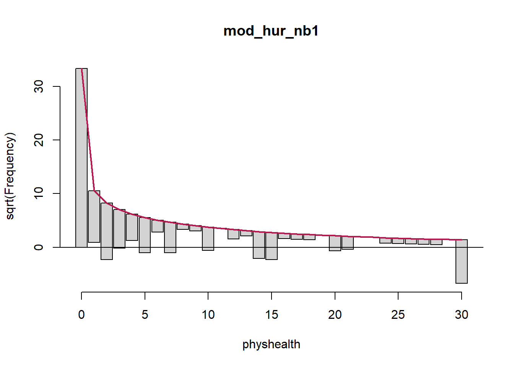
This improves the situation, but we’re still underfitting the 30s.
18.16.10 Specify the R2 and log (likelihood) values
We can calculate a proxy for R2 as the squared correlation of the fitted values and the observed values.
# The correlation of observed and fitted values
(hurnb1_r <- with(sm_hur_nb1, cor(physhealth, fitted)))[1] 0.2232941# R-square
hurnb1_r^2[1] 0.04986026logLik(mod_hur_nb1)'log Lik.' -2562.952 (df=7)Here, we have
| Model | Scale | R2 | log(likelihood) |
|---|---|---|---|
| Hurdle Model (Neg. Bin.) | Complex: log(physhealth) |
.050 | -2566.3 |
18.16.11 Check model assumptions
Here is a plot of residuals vs. fitted values on the original physhealth scale.
ggplot(sm_hur_nb1, aes(x = fitted, y = resid)) +
geom_point() +
labs(title = "Residuals vs. Fitted `physhealth`",
subtitle = "Hurdle model with Negative Binomial counts")18.16.12 Predictions for Harry and Sally
The predictions from this zero-inflated negative binomial regression model are obtained as follows…
predict(mod_hur_nb1, newdata = hs_data, type = "response") 1 2
6.047813 1.453596 The prediction for Harry is 6.04 days, and for Sally is 1.45 days.
18.16.13 Note: Fitting a Different Hurdle Model for Counts and Pr(zero)
Suppose we wanted to use only bmi_c to predict the probability of a zero count, but use both predictors in the model for the positive counts. We use the | command.
mod_hur_new1 <-
hurdle(physhealth ~ bmi_c + smoke100 | bmi_c,
dist = "negbin", zero.dist = "binomial",
data = sm_oh_A_young)
summary(mod_hur_new1)
Call:
hurdle(formula = physhealth ~ bmi_c + smoke100 | bmi_c, data = sm_oh_A_young,
dist = "negbin", zero.dist = "binomial")
Pearson residuals:
Min 1Q Median 3Q Max
-0.5681 -0.3809 -0.3488 -0.1517 7.0650
Count model coefficients (truncated negbin with log link):
Estimate Std. Error z value Pr(>|z|)
(Intercept) 1.305260 0.144512 9.032 < 2e-16 ***
bmi_c 0.018524 0.008131 2.278 0.0227 *
smoke100 0.573519 0.138747 4.134 3.57e-05 ***
Log(theta) -1.123030 0.206483 -5.439 5.36e-08 ***
Zero hurdle model coefficients (binomial with logit link):
Estimate Std. Error z value Pr(>|z|)
(Intercept) -0.762681 0.053905 -14.149 < 2e-16 ***
bmi_c 0.051171 0.007757 6.597 4.2e-11 ***
---
Signif. codes: 0 '***' 0.001 '**' 0.01 '*' 0.05 '.' 0.1 ' ' 1
Theta: count = 0.3253
Number of iterations in BFGS optimization: 17
Log-likelihood: -2570 on 6 Df18.16.14 Hanging Rootogram for this new Hurdle Model
countreg::rootogram(mod_hur_new1, max = 30)Not a meaningful improvement, certainly.
18.17 A Tobit (Censored) Regression Model
The idea of the tobit model (sometimes called a censored regression model) is to estimate associations for outcomes where we can see either left-censoring (censoring from below) or right-censoring (censoring from above.)
Consider the variable physhealth, which is restricted to fall between 0 and 30 by the way the measure was constructed. But supposed we think about a broader and latent (unobserved) variable describing physical health. Among the people with physhealth = 0, some would be incredible athletes and others would be in much poorer physical health but still healthy enough to truthfully answer 0. On the other end, some of the people responding 30 are in substantially worse physical health than others with that same response.
- Censoring from below takes place when values at or below a threshold (in this case 0) take that value.
- Censoring from above takes place when values at or above a threshold (here, 30) take that value.
Several examples of tobit analysis are available at https://stats.idre.ucla.edu/r/dae/tobit-models/, which is my primary source for the material here on those models.
The tobit model postulates that the value 0 in our model is just the lower limit of the underlying measure of poor physical health that we would actually observe in the population if we had a stronger measure. Similarly, we’ll postulate that 30 is just the upper limit of “poor health” that we can see. The approach I’ll take to run the tobit model comes from the vglm function in the VGAM package.
Here’s the model, and its summary. Note that the default Lower value for a tobit model is 0, so we didn’t technically have to list that here.
mod_tob1 <- vglm(physhealth ~ bmi_c + smoke100,
tobit(Lower = 0, Upper = 30),
type.fitted = "censored",
data = sm_oh_A_young)
summary(mod_tob1)
Call:
vglm(formula = physhealth ~ bmi_c + smoke100, family = tobit(Lower = 0,
Upper = 30), data = sm_oh_A_young, type.fitted = "censored")
Pearson residuals:
Min 1Q Median 3Q Max
mu -4.963 -0.6059 -0.4371 0.9127 2.558
loge(sd) -1.065 -0.3039 -0.2862 -0.1981 9.019
Coefficients:
Estimate Std. Error z value Pr(>|z|)
(Intercept):1 -11.02997 0.84462 -13.059 < 2e-16 ***
(Intercept):2 2.81768 0.03553 79.310 < 2e-16 ***
bmi_c 0.49105 0.07289 6.737 1.62e-11 ***
smoke100 5.69619 1.06207 5.363 8.17e-08 ***
---
Signif. codes: 0 '***' 0.001 '**' 0.01 '*' 0.05 '.' 0.1 ' ' 1
Number of linear predictors: 2
Names of linear predictors: mu, loge(sd)
Log-likelihood: -2563.135 on 3264 degrees of freedom
Number of iterations: 7
No Hauck-Donner effect found in any of the estimatesconfint(mod_tob1) 2.5 % 97.5 %
(Intercept):1 -12.6854002 -9.3745415
(Intercept):2 2.7480495 2.8873146
bmi_c 0.3481883 0.6339102
smoke100 3.6145827 7.777805218.17.1 The Fitted Equation
Because we’ve used the censoring approach, our model will limit its predictions to the range of [0, 30], where any predictions outside that range are censored. Values below 0 are fitted as 0, and values above 30 are fitted as 30.
The model equation is
physhealth = -11.00 + 0.49 bmi_c + 5.67 smoke10018.17.2 Interpreting the Coefficients
Tobit model regression coefficients are interpreted as we would a set of OLS coefficients, except that the linear effect is on the uncensored latent variable, rather than on the observed outcome.
In our case,
- a one-unit increase in
bmi_cis associated with a 0.49 day increase in the predicted value ofphyshealth, holdingsmoke100constant - a move from
smoke100= 0 to 1 is associated with a 5.67 day increase in the predicted value ofphyshealth, holdingbmi_cconstant - the coefficient labeled
(Intercept):1is the intercept for the model and is the predicted value ofphyshealthwhensmoke100= 0 andbmi_c= 0. Note that this value is -11, which is outside the range ofphyshealthvalues we observed. - the coefficient labeled
(Intercept):2is a statistic we can use after we exponentiate it, as follows:- here
(Intercept):2= 2.82, and exp(2.82) = 16.7768507, which is analogous to the square root of the residual variance in OLS regression, which is summarized for our OLS model asResidual standard error: 6.609.
- here
18.17.3 Testing the Predictors
We can test the model with and without bmi_c, for example, by fitting the model both ways, and comparing the results with either a Wald or Likelihood Ratio test, each of which is available in the lmtest package.
mod_tob_nobmi <- vglm(physhealth ~ smoke100,
tobit(Lower = 0, Upper = 30),
type.fitted = "censored",
data = sm_oh_A_young)
lmtest::waldtest(mod_tob1, mod_tob_nobmi)Wald test
Model 1: physhealth ~ bmi_c + smoke100
Model 2: physhealth ~ smoke100
Res.Df Df Chisq Pr(>Chisq)
1 3264
2 3265 -1 45.386 1.618e-11 ***
---
Signif. codes: 0 '***' 0.001 '**' 0.01 '*' 0.05 '.' 0.1 ' ' 1The likelihood ratio test we have used in some other settings isn’t available here.
18.17.4 Store fitted values and residuals
The residuals and fitted values from the tobit model can be stored and then summarized in several ways:
sm_tob1 <- sm_oh_A_young %>%
mutate(fitted = fitted(mod_tob1,
type.fitted = "censored"),
resid = physhealth - fitted)
sm_tob1 %>%
dplyr::select(physhealth, fitted, resid) %>%
head()# A tibble: 6 x 3
physhealth fitted resid
<int> <dbl> <dbl>
1 0 0. 0.
2 0 0. 0.
3 0 0. 0.
4 2 0. 2.
5 4 0. 4.
6 6 0. 6.18.17.5 Building Something Like a Rootogram
Building a rootogram is tricky for a tobit model, to say the least, but we can approximate a piece of the issue by plotting the rounded fitted values against the observed physhealth data.
ggplot(sm_tob1, aes(x = physhealth, y = round(fitted))) +
geom_jitter(width = 0.2) +
geom_abline(intercept = 0, slope = 1, col = "red")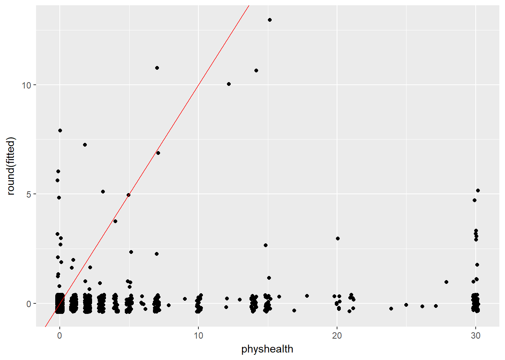
Note that the model never predicts a subject to have an underlying physhealth worse than about 12 (remember that larger numbers are worse here.)
18.17.6 Tables of the Observed and Fitted physhealth from Tobit
addmargins(table(round(sm_tob1$physhealth)))
0 1 2 3 4 5 6 7 8 9 10 12 13 14 15
1109 93 112 52 24 43 5 32 1 1 19 3 1 25 26
16 17 18 20 21 24 25 26 27 28 30 Sum
1 1 1 8 6 1 1 1 1 1 66 1634 addmargins(table(round(sm_tob1$fitted)))
0 1 2 3 4 5 6 7 8 10 11 13 Sum
1588 14 8 9 1 5 2 2 1 1 2 1 1634 18.17.7 Specify the R2 and log (likelihood) values
We can calculate a proxy for R2 as the squared correlation of the fitted values and the observed values.
# The correlation of observed and fitted values
(tob1_r <- with(sm_tob1, cor(physhealth, fitted))) [,1]
[1,] 0.1440334# R-square
tob1_r^2 [,1]
[1,] 0.02074562logLik(mod_tob1)[1] -2563.135Here, we have
| Model | Scale | R2 | log(likelihood) |
|---|---|---|---|
| Tobit | physhealth |
.021 | -2567.3 |
18.17.8 Check model assumptions
Here is a plot of residuals vs. fitted values.
ggplot(sm_tob1, aes(x = fitted, y = resid)) +
geom_point() +
labs(title = "Residuals vs. Fitted Values for Tobit 1")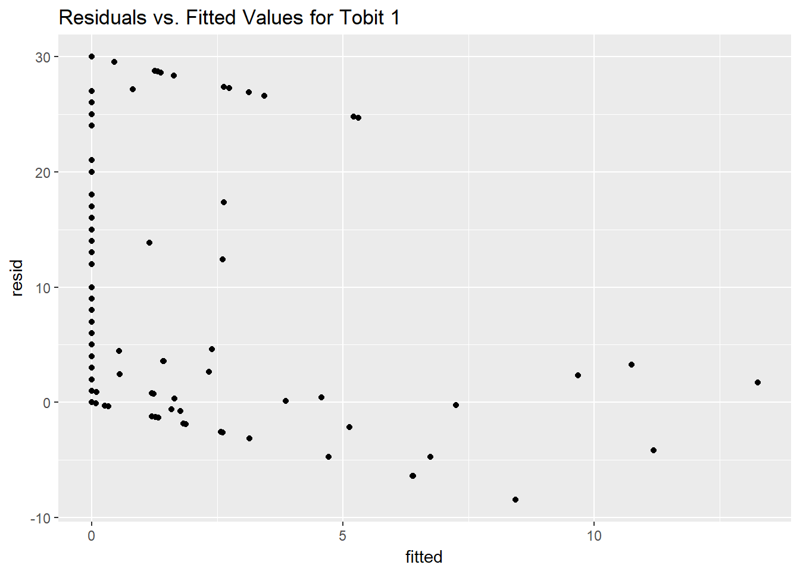
Here is a normal Q-Q plot of the Tobit Model 1 residuals.
qqnorm(sm_tob1$resid)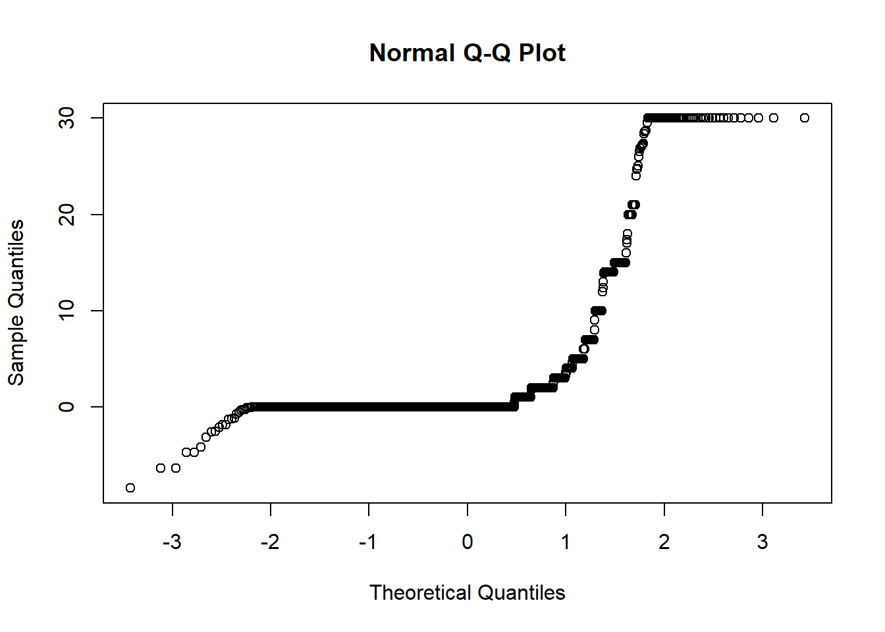
18.17.9 Predictions for Harry and Sally
The predictions from this tobit model are obtained as follows…
predict(mod_tob1, newdata = hs_data, type = "response") [,1]
1 -0.4232846
2 -13.4852170The prediction for both Harry and Sally under the tobit model would be truncated to 0 days.
This discussion is motivated by Section 6.2 of Gelman and Hill.↩
See http://data.library.virginia.edu/getting-started-with-negative-binomial-regression-modeling/↩
See Zeileis A Kleiber C Jackman S Regression Models for Count Data in R Vignette at https://cran.r-project.org/web/packages/pscl/vignettes/countreg.pdf↩
See https://cran.r-project.org/web/packages/pscl/vignettes/countreg.pdf for more details.↩
This \(\theta\) is the inverse of the dispersion parameter estimated for these models by most other software packages, like SAS, Stata and SPSS. See https://stats.idre.ucla.edu/r/dae/negative-binomial-regression/ for more details.↩
See http://data.library.virginia.edu/getting-started-with-negative-binomial-regression-modeling/↩
See https://stats.idre.ucla.edu/r/dae/zip/ for more on the zero-inflated poisson model.↩
http://data.library.virginia.edu/getting-started-with-hurdle-models/ is an excellent introduction, by Clay Ford, a Statistical Research Consultant at the University of Virginia Library. I can also recommend https://rpubs.com/kaz_yos/pscl-2 as a place to learn more about the
psclpackage, and the fitting and interpretation of both hurdle and zero-inflated regression models. Thatrpubssite has a link to this article by Hu, Pavlicova and Nunes from the Am J Drug Alcohol Abuse which provides a real set of examples from a trial of a behavioral health intervention meant to reduce the risk of unprotected sexual occasions as part of a strategy to reduce HIV risk.↩